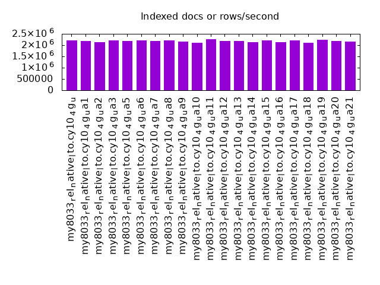

Introduction
This is a report for the insert benchmark with 480M docs and 24 client(s). It is generated by scripts (bash, awk, sed) and Tufte might not be impressed. An overview of the insert benchmark is here and a short update is here. Below, by DBMS, I mean DBMS+version.config. An example is my8020.c10b40 where my means MySQL, 8020 is version 8.0.20 and c10b40 is the name for the configuration file.
The test server has 80 cores with hyperthreads enabled, 256G RAM and fast storage. The benchmark was run with 24 clients and there were 1 or 3 connections per client (1 for queries or inserts without rate limits, 1+1 for rate limited inserts+deletes). There are 24 tables, with a client per table. It loads 480M rows without secondary indexes, creates secondary indexes, then inserts 120M rows with a delete per insert to avoid growing the table. It then does 3 read+write tests for 3600s each that do queries as fast as possible with 100, 500 and then 1000 inserts/second/client concurrent with the queries and 1000 deletes/second to avoid growing the table. The database is cached by the OS but not by InnoDB.
The tested DBMS are:
- my8033_rel_native_lto.cy10_4g_u - InnoDB and MySQL 8.0.33, rel_native_lto build, cy10_4g_u config, compiled with CMAKE_BUILD_TYPE=Release -O2, base config
- my8033_rel_native_lto.cy10_4g_ua1 - InnoDB and MySQL 8.0.33, rel_native_lto build, cy10_4g_ua1 config, compiled with CMAKE_BUILD_TYPE=Release -O2, adds innodb_use_native_aio=off
- my8033_rel_native_lto.cy10_4g_ua2 - InnoDB and MySQL 8.0.33, rel_native_lto build, cy10_4g_ua2 config, compiled with CMAKE_BUILD_TYPE=Release -O2, adds innodb_io_capacity=20k, innodb_io_capacity_max=40k
- my8033_rel_native_lto.cy10_4g_ua3 - InnoDB and MySQL 8.0.33, rel_native_lto build, cy10_4g_ua3 config, compiled with CMAKE_BUILD_TYPE=Release -O2, adds innodb_io_capacity=20k, innodb_io_capacity_max=40k, innodb_flush_sync=OFF
- my8033_rel_native_lto.cy10_4g_ua5 - InnoDB and MySQL 8.0.33, rel_native_lto build, cy10_4g_ua5 config, compiled with CMAKE_BUILD_TYPE=Release -O2, adds innodb_change_buffer=none
- my8033_rel_native_lto.cy10_4g_ua6 - InnoDB and MySQL 8.0.33, rel_native_lto build, cy10_4g_ua6 config, compiled with CMAKE_BUILD_TYPE=Release -O2, adds innodb_max_dirty_pages_pct_lwm=40, innodb_max_dirty_pages_pct=50
- my8033_rel_native_lto.cy10_4g_ua7 - InnoDB and MySQL 8.0.33, rel_native_lto build, cy10_4g_ua7 config, compiled with CMAKE_BUILD_TYPE=Release -O2, adds innodb_lru_scan_depth=2048
- my8033_rel_native_lto.cy10_4g_ua8 - InnoDB and MySQL 8.0.33, rel_native_lto build, cy10_4g_ua8 config, compiled with CMAKE_BUILD_TYPE=Release -O2, adds innodb_lru_scan_depth=4096
- my8033_rel_native_lto.cy10_4g_ua9 - InnoDB and MySQL 8.0.33, rel_native_lto build, cy10_4g_ua9 config, compiled with CMAKE_BUILD_TYPE=Release -O2, adds innodb_lru_scan_depth=8192
- my8033_rel_native_lto.cy10_4g_ua10 - InnoDB and MySQL 8.0.33, rel_native_lto build, cy10_4g_ua10 config, compiled with CMAKE_BUILD_TYPE=Release -O2, adds innodb_purge_threads=4, innodb_read_io_threads=4, innodb_write_io_threads=4, innodb_page_cleaners=4, innodb_buffer_pool_instances=4
- my8033_rel_native_lto.cy10_4g_ua11 - InnoDB and MySQL 8.0.33, rel_native_lto build, cy10_4g_ua11 config, compiled with CMAKE_BUILD_TYPE=Release -O2, adds innodb_redo_log_capacity=16G
- my8033_rel_native_lto.cy10_4g_ua12 - InnoDB and MySQL 8.0.33, rel_native_lto build, cy10_4g_ua12 config, compiled with CMAKE_BUILD_TYPE=Release -O2, adds innodb_redo_log_capacity=32G
- my8033_rel_native_lto.cy10_4g_ua13 - InnoDB and MySQL 8.0.33, rel_native_lto build, cy10_4g_ua13 config, compiled with CMAKE_BUILD_TYPE=Release -O2, adds innodb_max_purge_lag=50k, innodb_max_purge_lag_delay=1M, innodb_purge_threads=8
- my8033_rel_native_lto.cy10_4g_ua14 - InnoDB and MySQL 8.0.33, rel_native_lto build, cy10_4g_ua14 config, compiled with CMAKE_BUILD_TYPE=Release -O2, adds innodb_change_buffering=inserts
- my8033_rel_native_lto.cy10_4g_ua15 - InnoDB and MySQL 8.0.33, rel_native_lto build, cy10_4g_ua15 config, compiled with CMAKE_BUILD_TYPE=Release -O2, adds innodb_idle_flush_pct=default
- my8033_rel_native_lto.cy10_4g_ua16 - InnoDB and MySQL 8.0.33, rel_native_lto build, cy10_4g_ua16 config, compiled with CMAKE_BUILD_TYPE=Release -O2, adds innodb_io_capacity=2000, innodb_io_capacity_max=4000
- my8033_rel_native_lto.cy10_4g_ua17 - InnoDB and MySQL 8.0.33, rel_native_lto build, cy10_4g_ua17 config, compiled with CMAKE_BUILD_TYPE=Release -O2, adds innodb_doublewrite=OFF (not safe for production)
- my8033_rel_native_lto.cy10_4g_ua18 - InnoDB and MySQL 8.0.33, rel_native_lto build, cy10_4g_ua18 config, compiled with CMAKE_BUILD_TYPE=Release -O2, adds innodb_buffer_pool_instances=4
- my8033_rel_native_lto.cy10_4g_ua19 - InnoDB and MySQL 8.0.33, rel_native_lto build, cy10_4g_ua19 config, compiled with CMAKE_BUILD_TYPE=Release -O2, adds innodb_max_dirty_pages_pct_lwm=20, innodb_max_dirty_pages_pct=50
- my8033_rel_native_lto.cy10_4g_ua20 - InnoDB and MySQL 8.0.33, rel_native_lto build, cy10_4g_ua20 config, compiled with CMAKE_BUILD_TYPE=Release -O2, adds innodb_max_purge_lag=200k, innodb_max_purge_lag_delay=1M
- my8033_rel_native_lto.cy10_4g_ua21 - InnoDB and MySQL 8.0.33, rel_native_lto build, cy10_4g_ua21 config, compiled with CMAKE_BUILD_TYPE=Release -O2, adds innodb_max_purge_lag=500k, innodb_max_purge_lag_delay=1M
Contents
- Summary
- l.i0: load without secondary indexes
- l.x: create secondary indexes
- l.i1: continue load after secondary indexes created
- q100.1: range queries with 100 insert/s per client
- q500.1: range queries with 500 insert/s per client
- q1000.1: range queries with 1000 insert/s per client
Summary
The numbers are inserts/s for l.i0 and l.i1, indexed docs (or rows) /s for l.x and queries/s for q*.2. The values are the average rate over the entire test for inserts (IPS) and queries (QPS). The range of values for IPS and QPS is split into 3 parts: bottom 25%, middle 50%, top 25%. Values in the bottom 25% have a red background, values in the top 25% have a green background and values in the middle have no color. A gray background is used for values that can be ignored because the DBMS did not sustain the target insert rate. Red backgrounds are not used when the minimum value is within 80% of the max value.
| dbms | l.i0 | l.x | l.i1 | q100.1 | q500.1 | q1000.1 |
|---|---|---|---|---|---|---|
| my8033_rel_native_lto.cy10_4g_u | 909091 | 2212442 | 12784 | 22098 | 5399 | 5250 |
| my8033_rel_native_lto.cy10_4g_ua1 | 898876 | 2172398 | 11981 | 24113 | 4021 | 3766 |
| my8033_rel_native_lto.cy10_4g_ua2 | 917782 | 2143304 | 12976 | 21132 | 5427 | 5470 |
| my8033_rel_native_lto.cy10_4g_ua3 | 912548 | 2212442 | 12990 | 21284 | 5429 | 5296 |
| my8033_rel_native_lto.cy10_4g_ua5 | 916030 | 2172398 | 8795 | 14058 | 2953 | 2952 |
| my8033_rel_native_lto.cy10_4g_ua6 | 909091 | 2222685 | 12858 | 21773 | 5435 | 5310 |
| my8033_rel_native_lto.cy10_4g_ua7 | 909091 | 2172398 | 12468 | 22344 | 5432 | 5335 |
| my8033_rel_native_lto.cy10_4g_ua8 | 916030 | 2202294 | 12176 | 22142 | 5336 | 5409 |
| my8033_rel_native_lto.cy10_4g_ua9 | 919540 | 2152915 | 11688 | 22114 | 5057 | 5129 |
| my8033_rel_native_lto.cy10_4g_ua10 | 916030 | 2114978 | 12330 | 22650 | 5582 | 5489 |
| my8033_rel_native_lto.cy10_4g_ua11 | 910816 | 2275355 | 12938 | 21719 | 5403 | 5205 |
| my8033_rel_native_lto.cy10_4g_ua12 | 912548 | 2172398 | 12602 | 21563 | 5340 | 5374 |
| my8033_rel_native_lto.cy10_4g_ua13 | 914286 | 2172398 | 6934 | 35310 | 13370 | 13944 |
| my8033_rel_native_lto.cy10_4g_ua14 | 917782 | 2143304 | 13568 | 15145 | 3760 | 3599 |
| my8033_rel_native_lto.cy10_4g_ua15 | 916030 | 2212442 | 12706 | 21691 | 5289 | 5154 |
| my8033_rel_native_lto.cy10_4g_ua16 | 912548 | 2133778 | 12082 | 22174 | 5601 | 5748 |
| my8033_rel_native_lto.cy10_4g_ua17 | 910816 | 2212442 | 17860 | 38810 | 25542 | 10873 |
| my8033_rel_native_lto.cy10_4g_ua18 | 898876 | 2105702 | 13466 | 21914 | 5730 | 5349 |
| my8033_rel_native_lto.cy10_4g_ua19 | 916030 | 2243458 | 12424 | 22206 | 5369 | 5074 |
| my8033_rel_native_lto.cy10_4g_ua20 | 914286 | 2172398 | 7018 | 24234 | 12905 | 14443 |
| my8033_rel_native_lto.cy10_4g_ua21 | 912548 | 2162613 | 8746 | 17598 | 10799 | 14368 |
This table has relative throughput, throughput for the DBMS relative to the DBMS in the first line, using the absolute throughput from the previous table. Values less than 0.95 have a yellow background. Values greater than 1.05 have a blue background.
| dbms | l.i0 | l.x | l.i1 | q100.1 | q500.1 | q1000.1 |
|---|---|---|---|---|---|---|
| my8033_rel_native_lto.cy10_4g_u | 1.00 | 1.00 | 1.00 | 1.00 | 1.00 | 1.00 |
| my8033_rel_native_lto.cy10_4g_ua1 | 0.99 | 0.98 | 0.94 | 1.09 | 0.74 | 0.72 |
| my8033_rel_native_lto.cy10_4g_ua2 | 1.01 | 0.97 | 1.02 | 0.96 | 1.01 | 1.04 |
| my8033_rel_native_lto.cy10_4g_ua3 | 1.00 | 1.00 | 1.02 | 0.96 | 1.01 | 1.01 |
| my8033_rel_native_lto.cy10_4g_ua5 | 1.01 | 0.98 | 0.69 | 0.64 | 0.55 | 0.56 |
| my8033_rel_native_lto.cy10_4g_ua6 | 1.00 | 1.00 | 1.01 | 0.99 | 1.01 | 1.01 |
| my8033_rel_native_lto.cy10_4g_ua7 | 1.00 | 0.98 | 0.98 | 1.01 | 1.01 | 1.02 |
| my8033_rel_native_lto.cy10_4g_ua8 | 1.01 | 1.00 | 0.95 | 1.00 | 0.99 | 1.03 |
| my8033_rel_native_lto.cy10_4g_ua9 | 1.01 | 0.97 | 0.91 | 1.00 | 0.94 | 0.98 |
| my8033_rel_native_lto.cy10_4g_ua10 | 1.01 | 0.96 | 0.96 | 1.02 | 1.03 | 1.05 |
| my8033_rel_native_lto.cy10_4g_ua11 | 1.00 | 1.03 | 1.01 | 0.98 | 1.00 | 0.99 |
| my8033_rel_native_lto.cy10_4g_ua12 | 1.00 | 0.98 | 0.99 | 0.98 | 0.99 | 1.02 |
| my8033_rel_native_lto.cy10_4g_ua13 | 1.01 | 0.98 | 0.54 | 1.60 | 2.48 | 2.66 |
| my8033_rel_native_lto.cy10_4g_ua14 | 1.01 | 0.97 | 1.06 | 0.69 | 0.70 | 0.69 |
| my8033_rel_native_lto.cy10_4g_ua15 | 1.01 | 1.00 | 0.99 | 0.98 | 0.98 | 0.98 |
| my8033_rel_native_lto.cy10_4g_ua16 | 1.00 | 0.96 | 0.95 | 1.00 | 1.04 | 1.09 |
| my8033_rel_native_lto.cy10_4g_ua17 | 1.00 | 1.00 | 1.40 | 1.76 | 4.73 | 2.07 |
| my8033_rel_native_lto.cy10_4g_ua18 | 0.99 | 0.95 | 1.05 | 0.99 | 1.06 | 1.02 |
| my8033_rel_native_lto.cy10_4g_ua19 | 1.01 | 1.01 | 0.97 | 1.00 | 0.99 | 0.97 |
| my8033_rel_native_lto.cy10_4g_ua20 | 1.01 | 0.98 | 0.55 | 1.10 | 2.39 | 2.75 |
| my8033_rel_native_lto.cy10_4g_ua21 | 1.00 | 0.98 | 0.68 | 0.80 | 2.00 | 2.74 |
This lists the average rate of inserts/s for the tests that do inserts concurrent with queries. For such tests the query rate is listed in the table above. The read+write tests are setup so that the insert rate should match the target rate every second. Cells that are not at least 95% of the target have a red background to indicate a failure to satisfy the target.
| dbms | q100.1 | q500.1 | q1000.1 |
|---|---|---|---|
| my8033_rel_native_lto.cy10_4g_u | 2381 | 8414 | 7870 |
| my8033_rel_native_lto.cy10_4g_ua1 | 2381 | 8199 | 8129 |
| my8033_rel_native_lto.cy10_4g_ua2 | 2381 | 7718 | 7237 |
| my8033_rel_native_lto.cy10_4g_ua3 | 2381 | 7843 | 7548 |
| my8033_rel_native_lto.cy10_4g_ua5 | 2381 | 8502 | 8506 |
| my8033_rel_native_lto.cy10_4g_ua6 | 2381 | 8942 | 8666 |
| my8033_rel_native_lto.cy10_4g_ua7 | 2381 | 8105 | 7593 |
| my8033_rel_native_lto.cy10_4g_ua8 | 2381 | 8061 | 7480 |
| my8033_rel_native_lto.cy10_4g_ua9 | 2381 | 8131 | 7314 |
| my8033_rel_native_lto.cy10_4g_ua10 | 2381 | 8690 | 7993 |
| my8033_rel_native_lto.cy10_4g_ua11 | 2381 | 8311 | 7826 |
| my8033_rel_native_lto.cy10_4g_ua12 | 2381 | 8416 | 7890 |
| my8033_rel_native_lto.cy10_4g_ua13 | 2381 | 5326 | 5241 |
| my8033_rel_native_lto.cy10_4g_ua14 | 2380 | 11517 | 11808 |
| my8033_rel_native_lto.cy10_4g_ua15 | 2380 | 8375 | 7845 |
| my8033_rel_native_lto.cy10_4g_ua16 | 2381 | 7998 | 7499 |
| my8033_rel_native_lto.cy10_4g_ua17 | 2381 | 11914 | 12783 |
| my8033_rel_native_lto.cy10_4g_ua18 | 2378 | 7301 | 7185 |
| my8033_rel_native_lto.cy10_4g_ua19 | 2381 | 9178 | 8725 |
| my8033_rel_native_lto.cy10_4g_ua20 | 2381 | 5594 | 4902 |
| my8033_rel_native_lto.cy10_4g_ua21 | 2381 | 5845 | 4568 |
| target | 2400 | 12000 | 24000 |
l.i0
l.i0: load without secondary indexes. Graphs for performance per 1-second interval are here.
Average throughput:

Insert response time histogram: each cell has the percentage of responses that take <= the time in the header and max is the max response time in seconds. For the max column values in the top 25% of the range have a red background and in the bottom 25% of the range have a green background. The red background is not used when the min value is within 80% of the max value.
| dbms | 256us | 1ms | 4ms | 16ms | 64ms | 256ms | 1s | 4s | 16s | gt | max |
|---|---|---|---|---|---|---|---|---|---|---|---|
| my8033_rel_native_lto.cy10_4g_u | 99.776 | 0.176 | 0.005 | 0.043 | 0.120 | ||||||
| my8033_rel_native_lto.cy10_4g_ua1 | 99.767 | 0.184 | 0.007 | 0.043 | 0.115 | ||||||
| my8033_rel_native_lto.cy10_4g_ua2 | 99.776 | 0.178 | 0.003 | 0.043 | 0.115 | ||||||
| my8033_rel_native_lto.cy10_4g_ua3 | 99.776 | 0.177 | 0.004 | 0.043 | 0.115 | ||||||
| my8033_rel_native_lto.cy10_4g_ua5 | 99.776 | 0.178 | 0.004 | 0.043 | 0.117 | ||||||
| my8033_rel_native_lto.cy10_4g_ua6 | 99.777 | 0.177 | 0.004 | 0.042 | 0.115 | ||||||
| my8033_rel_native_lto.cy10_4g_ua7 | 99.776 | 0.179 | 0.003 | 0.042 | 0.118 | ||||||
| my8033_rel_native_lto.cy10_4g_ua8 | 99.773 | 0.180 | 0.005 | 0.043 | 0.118 | ||||||
| my8033_rel_native_lto.cy10_4g_ua9 | 99.762 | 0.192 | 0.003 | 0.043 | 0.109 | ||||||
| my8033_rel_native_lto.cy10_4g_ua10 | 99.772 | 0.182 | 0.004 | 0.043 | 0.116 | ||||||
| my8033_rel_native_lto.cy10_4g_ua11 | 99.727 | 0.206 | 0.024 | 0.043 | 0.127 | ||||||
| my8033_rel_native_lto.cy10_4g_ua12 | 99.750 | 0.193 | 0.015 | 0.042 | 0.110 | ||||||
| my8033_rel_native_lto.cy10_4g_ua13 | 99.777 | 0.177 | 0.003 | 0.043 | 0.123 | ||||||
| my8033_rel_native_lto.cy10_4g_ua14 | 99.777 | 0.178 | 0.003 | 0.043 | 0.117 | ||||||
| my8033_rel_native_lto.cy10_4g_ua15 | 99.777 | 0.176 | 0.004 | 0.042 | 0.124 | ||||||
| my8033_rel_native_lto.cy10_4g_ua16 | 99.765 | 0.188 | 0.004 | 0.043 | 0.120 | ||||||
| my8033_rel_native_lto.cy10_4g_ua17 | 99.780 | 0.174 | 0.004 | 0.042 | 0.118 | ||||||
| my8033_rel_native_lto.cy10_4g_ua18 | 99.767 | 0.185 | 0.005 | 0.043 | 0.116 | ||||||
| my8033_rel_native_lto.cy10_4g_ua19 | 99.776 | 0.177 | 0.004 | 0.043 | 0.125 | ||||||
| my8033_rel_native_lto.cy10_4g_ua20 | 99.777 | 0.176 | 0.004 | 0.043 | 0.124 | ||||||
| my8033_rel_native_lto.cy10_4g_ua21 | 99.776 | 0.176 | 0.005 | 0.043 | 0.122 |
Performance metrics for the DBMS listed above. Some are normalized by throughput, others are not. Legend for results is here.
ips qps rps rmbps wps wmbps rpq rkbpq wpi wkbpi csps cpups cspq cpupq dbgb1 dbgb2 rss maxop p50 p99 tag 909091 0 0 0.0 3586.3 239.3 0.000 0.000 0.004 0.270 216462 51.3 0.238 45 31.7 160.3 4.8 0.120 39960 34562 480m.my8033_rel_native_lto.cy10_4g_u 898876 0 0 0.0 3579.1 239.0 0.000 0.000 0.004 0.272 251187 51.0 0.279 45 31.7 160.3 4.8 0.115 39556 33566 480m.my8033_rel_native_lto.cy10_4g_ua1 917782 0 0 0.0 3619.5 243.7 0.000 0.000 0.004 0.272 217053 51.2 0.236 45 31.7 160.3 4.8 0.115 39761 34166 480m.my8033_rel_native_lto.cy10_4g_ua2 912548 0 0 0.0 3590.6 241.8 0.000 0.000 0.004 0.271 221890 51.5 0.243 45 31.7 160.3 4.8 0.115 39860 34366 480m.my8033_rel_native_lto.cy10_4g_ua3 916030 0 0 0.0 3590.2 242.0 0.000 0.000 0.004 0.270 216709 50.4 0.237 44 31.7 160.3 4.8 0.117 40360 34465 480m.my8033_rel_native_lto.cy10_4g_ua5 909091 0 0 0.0 3694.1 246.4 0.000 0.000 0.004 0.278 218307 51.3 0.240 45 31.7 160.3 4.8 0.115 40060 34465 480m.my8033_rel_native_lto.cy10_4g_ua6 909091 0 0 0.0 3582.4 239.1 0.000 0.000 0.004 0.269 216501 51.4 0.238 45 31.7 160.3 4.6 0.118 39561 34566 480m.my8033_rel_native_lto.cy10_4g_ua7 916030 0 0 0.0 3582.8 241.0 0.000 0.000 0.004 0.269 214426 50.6 0.234 44 31.7 160.3 4.4 0.118 39960 34366 480m.my8033_rel_native_lto.cy10_4g_ua8 919540 0 0 0.0 3581.4 244.5 0.000 0.000 0.004 0.272 221387 51.4 0.241 45 31.7 160.3 3.9 0.109 39860 34166 480m.my8033_rel_native_lto.cy10_4g_ua9 916030 0 0 0.0 3576.0 240.1 0.000 0.000 0.004 0.268 222895 50.5 0.243 44 31.7 160.3 4.8 0.116 40559 34266 480m.my8033_rel_native_lto.cy10_4g_ua10 910816 0 0 0.0 3668.2 246.3 0.000 0.000 0.004 0.277 217443 51.4 0.239 45 31.7 48.3 4.8 0.127 40160 34466 480m.my8033_rel_native_lto.cy10_4g_ua11 912548 0 0 0.0 3600.9 241.1 0.000 0.000 0.004 0.271 213721 51.2 0.234 45 31.7 64.3 4.8 0.110 40060 34066 480m.my8033_rel_native_lto.cy10_4g_ua12 914286 0 0 0.0 3591.0 240.0 0.000 0.000 0.004 0.269 218392 50.9 0.239 45 31.7 160.3 4.8 0.123 39960 34765 480m.my8033_rel_native_lto.cy10_4g_ua13 917782 0 0 0.0 3621.0 242.3 0.000 0.000 0.004 0.270 219013 51.4 0.239 45 31.7 160.3 4.8 0.117 40160 34366 480m.my8033_rel_native_lto.cy10_4g_ua14 916030 0 0 0.0 3587.1 238.5 0.000 0.000 0.004 0.267 216617 51.4 0.236 45 31.7 160.3 4.8 0.124 40160 34765 480m.my8033_rel_native_lto.cy10_4g_ua15 912548 0 0 0.0 3515.2 239.2 0.000 0.000 0.004 0.268 219059 51.3 0.240 45 31.7 160.3 4.8 0.120 39966 33764 480m.my8033_rel_native_lto.cy10_4g_ua16 910816 0 0 0.0 2351.1 192.3 0.000 0.000 0.003 0.216 211110 50.6 0.232 44 31.7 160.3 4.7 0.118 39860 33167 480m.my8033_rel_native_lto.cy10_4g_ua17 898876 0 0 0.0 3929.5 241.1 0.000 0.000 0.004 0.275 227979 51.0 0.254 45 31.7 160.3 4.8 0.116 39461 34066 480m.my8033_rel_native_lto.cy10_4g_ua18 916030 0 0 0.0 3731.2 248.9 0.000 0.000 0.004 0.278 228023 51.0 0.249 45 31.7 160.3 4.8 0.125 39661 34066 480m.my8033_rel_native_lto.cy10_4g_ua19 914286 0 0 0.0 3579.5 243.0 0.000 0.000 0.004 0.272 230646 51.1 0.252 45 31.7 160.3 4.8 0.124 39860 33766 480m.my8033_rel_native_lto.cy10_4g_ua20 912548 0 0 0.0 3585.9 242.1 0.000 0.000 0.004 0.272 222584 50.7 0.244 44 31.7 160.3 4.7 0.122 40059 34266 480m.my8033_rel_native_lto.cy10_4g_ua21
l.x
l.x: create secondary indexes.
Average throughput:
Performance metrics for the DBMS listed above. Some are normalized by throughput, others are not. Legend for results is here.
ips qps rps rmbps wps wmbps rpq rkbpq wpi wkbpi csps cpups cspq cpupq dbgb1 dbgb2 rss maxop p50 p99 tag 2212442 0 11956 579.9 36888.7 1616.5 0.005 0.268 0.017 0.748 206986 79.5 0.094 29 70.6 199.2 4.8 0.006 NA NA 480m.my8033_rel_native_lto.cy10_4g_u 2172398 0 11685 566.7 39011.8 1594.6 0.005 0.267 0.018 0.752 276041 79.2 0.127 29 70.6 199.2 4.8 0.010 NA NA 480m.my8033_rel_native_lto.cy10_4g_ua1 2143304 0 11424 554.1 37057.4 1557.0 0.005 0.265 0.017 0.744 208809 79.4 0.097 30 70.6 199.2 4.8 0.006 NA NA 480m.my8033_rel_native_lto.cy10_4g_ua2 2212442 0 11953 579.8 38297.7 1625.4 0.005 0.268 0.017 0.752 214700 79.5 0.097 29 70.6 199.2 4.8 0.008 NA NA 480m.my8033_rel_native_lto.cy10_4g_ua3 2172398 0 11683 566.7 39150.2 1591.2 0.005 0.267 0.018 0.750 226647 79.5 0.104 29 70.6 199.2 4.8 0.013 NA NA 480m.my8033_rel_native_lto.cy10_4g_ua5 2222685 0 11954 579.8 38026.0 1611.3 0.005 0.267 0.017 0.742 213920 80.0 0.096 29 70.6 199.2 4.8 0.007 NA NA 480m.my8033_rel_native_lto.cy10_4g_ua6 2172398 0 11683 566.6 38505.4 1587.1 0.005 0.267 0.018 0.748 220621 78.5 0.102 29 70.6 199.2 4.8 0.009 NA NA 480m.my8033_rel_native_lto.cy10_4g_ua7 2202294 0 11684 566.7 39923.7 1594.9 0.005 0.264 0.018 0.742 237666 78.4 0.108 28 70.6 199.2 4.8 0.008 NA NA 480m.my8033_rel_native_lto.cy10_4g_ua8 2152915 0 11425 554.1 38642.3 1554.7 0.005 0.264 0.018 0.739 232061 79.0 0.108 29 70.6 199.2 4.8 0.006 NA NA 480m.my8033_rel_native_lto.cy10_4g_ua9 2114978 0 11424 554.2 37029.4 1550.0 0.005 0.268 0.018 0.750 223938 80.4 0.106 30 70.6 199.2 4.8 0.018 NA NA 480m.my8033_rel_native_lto.cy10_4g_ua10 2275355 0 12242 593.7 38500.2 1642.5 0.005 0.267 0.017 0.739 215701 79.5 0.095 28 70.6 87.2 4.8 0.006 NA NA 480m.my8033_rel_native_lto.cy10_4g_ua11 2172398 0 11684 566.9 37621.5 1583.6 0.005 0.267 0.017 0.746 212470 79.2 0.098 29 70.6 103.2 4.8 0.010 NA NA 480m.my8033_rel_native_lto.cy10_4g_ua12 2172398 0 11684 566.7 38683.7 1588.1 0.005 0.267 0.018 0.749 219856 78.7 0.101 29 70.6 199.2 4.8 0.008 NA NA 480m.my8033_rel_native_lto.cy10_4g_ua13 2143304 0 11425 554.0 38116.7 1557.6 0.005 0.265 0.018 0.744 220487 79.3 0.103 30 70.6 199.2 4.8 0.007 NA NA 480m.my8033_rel_native_lto.cy10_4g_ua14 2212442 0 11957 579.9 37023.4 1607.9 0.005 0.268 0.017 0.744 206743 79.2 0.093 29 70.6 199.2 4.8 0.007 NA NA 480m.my8033_rel_native_lto.cy10_4g_ua15 2133778 0 11424 554.2 40186.6 1563.5 0.005 0.266 0.019 0.750 249461 77.7 0.117 29 70.6 199.2 4.8 0.017 NA NA 480m.my8033_rel_native_lto.cy10_4g_ua16 2212442 0 11953 579.7 27131.8 1381.1 0.005 0.268 0.012 0.639 169073 79.2 0.076 29 70.6 199.2 4.8 0.008 NA NA 480m.my8033_rel_native_lto.cy10_4g_ua17 2105702 0 11173 541.9 37798.3 1530.3 0.005 0.264 0.018 0.744 194682 78.3 0.092 30 70.6 199.2 4.9 0.023 NA NA 480m.my8033_rel_native_lto.cy10_4g_ua18 2243458 0 11954 579.9 37097.3 1604.5 0.005 0.265 0.017 0.732 215607 77.7 0.096 28 70.6 199.2 4.8 0.007 NA NA 480m.my8033_rel_native_lto.cy10_4g_ua19 2172398 0 11682 566.7 38091.4 1592.7 0.005 0.267 0.018 0.751 225391 80.6 0.104 30 70.6 199.2 4.8 0.007 NA NA 480m.my8033_rel_native_lto.cy10_4g_ua20 2162613 0 11680 566.5 38883.1 1590.8 0.005 0.268 0.018 0.753 227126 78.8 0.105 29 70.6 199.2 4.8 0.006 NA NA 480m.my8033_rel_native_lto.cy10_4g_ua21
l.i1
l.i1: continue load after secondary indexes created. Graphs for performance per 1-second interval are here.
Average throughput:
Insert response time histogram: each cell has the percentage of responses that take <= the time in the header and max is the max response time in seconds. For the max column values in the top 25% of the range have a red background and in the bottom 25% of the range have a green background. The red background is not used when the min value is within 80% of the max value.
| dbms | 256us | 1ms | 4ms | 16ms | 64ms | 256ms | 1s | 4s | 16s | gt | max |
|---|---|---|---|---|---|---|---|---|---|---|---|
| my8033_rel_native_lto.cy10_4g_u | 0.005 | 5.192 | 54.899 | 35.526 | 4.174 | 0.146 | 0.058 | 9.031 | |||
| my8033_rel_native_lto.cy10_4g_ua1 | 0.003 | 4.328 | 68.397 | 21.932 | 4.143 | 1.183 | 0.013 | 9.324 | |||
| my8033_rel_native_lto.cy10_4g_ua2 | 0.033 | 5.479 | 54.683 | 35.557 | 4.068 | 0.116 | 0.064 | 11.052 | |||
| my8033_rel_native_lto.cy10_4g_ua3 | 0.081 | 5.539 | 54.922 | 35.223 | 4.047 | 0.125 | 0.063 | 9.496 | |||
| my8033_rel_native_lto.cy10_4g_ua5 | 0.002 | 0.072 | 99.681 | 0.246 | 0.448 | ||||||
| my8033_rel_native_lto.cy10_4g_ua6 | nonzero | 4.419 | 55.453 | 35.883 | 4.070 | 0.121 | 0.054 | 9.258 | |||
| my8033_rel_native_lto.cy10_4g_ua7 | 3.477 | 53.408 | 37.113 | 5.786 | 0.197 | 0.018 | 8.463 | ||||
| my8033_rel_native_lto.cy10_4g_ua8 | 0.002 | 5.464 | 51.496 | 38.526 | 4.336 | 0.103 | 0.072 | 10.476 | |||
| my8033_rel_native_lto.cy10_4g_ua9 | 0.001 | 4.480 | 50.529 | 40.481 | 4.351 | 0.092 | 0.066 | 10.905 | |||
| my8033_rel_native_lto.cy10_4g_ua10 | nonzero | 4.836 | 56.901 | 33.711 | 4.379 | 0.105 | 0.068 | 11.191 | |||
| my8033_rel_native_lto.cy10_4g_ua11 | 0.068 | 5.114 | 54.254 | 36.274 | 4.114 | 0.114 | 0.062 | 8.738 | |||
| my8033_rel_native_lto.cy10_4g_ua12 | nonzero | 5.104 | 54.014 | 36.567 | 4.155 | 0.098 | 0.063 | 10.346 | |||
| my8033_rel_native_lto.cy10_4g_ua13 | 0.016 | 10.744 | 65.914 | 23.326 | 0.587 | ||||||
| my8033_rel_native_lto.cy10_4g_ua14 | 0.126 | 74.894 | 22.531 | 2.143 | 0.305 | 0.426 | |||||
| my8033_rel_native_lto.cy10_4g_ua15 | nonzero | 4.649 | 54.765 | 36.080 | 4.282 | 0.184 | 0.039 | 9.730 | |||
| my8033_rel_native_lto.cy10_4g_ua16 | 4.813 | 53.169 | 37.433 | 4.427 | 0.094 | 0.065 | 12.235 | ||||
| my8033_rel_native_lto.cy10_4g_ua17 | nonzero | 7.557 | 71.230 | 19.717 | 1.368 | 0.091 | 0.036 | 7.918 | |||
| my8033_rel_native_lto.cy10_4g_ua18 | 2.877 | 52.785 | 38.925 | 5.313 | 0.084 | 0.017 | 9.548 | ||||
| my8033_rel_native_lto.cy10_4g_ua19 | 0.001 | 4.389 | 55.294 | 36.095 | 4.068 | 0.094 | 0.060 | 10.877 | |||
| my8033_rel_native_lto.cy10_4g_ua20 | 0.257 | 6.222 | 88.595 | 4.894 | 0.028 | 0.004 | 9.113 | ||||
| my8033_rel_native_lto.cy10_4g_ua21 | 0.596 | 14.128 | 80.612 | 4.555 | 0.082 | 0.026 | 10.037 |
Delete response time histogram: each cell has the percentage of responses that take <= the time in the header and max is the max response time in seconds. For the max column values in the top 25% of the range have a red background and in the bottom 25% of the range have a green background. The red background is not used when the min value is within 80% of the max value.
| dbms | 256us | 1ms | 4ms | 16ms | 64ms | 256ms | 1s | 4s | 16s | gt | max |
|---|---|---|---|---|---|---|---|---|---|---|---|
| my8033_rel_native_lto.cy10_4g_u | 0.071 | 7.147 | 56.324 | 32.697 | 3.562 | 0.147 | 0.052 | 8.925 | |||
| my8033_rel_native_lto.cy10_4g_ua1 | 0.056 | 6.722 | 70.394 | 18.545 | 3.226 | 1.045 | 0.012 | 7.674 | |||
| my8033_rel_native_lto.cy10_4g_ua2 | 0.118 | 7.479 | 55.859 | 32.878 | 3.490 | 0.115 | 0.061 | 9.533 | |||
| my8033_rel_native_lto.cy10_4g_ua3 | 0.176 | 7.896 | 55.858 | 32.429 | 3.457 | 0.124 | 0.061 | 9.342 | |||
| my8033_rel_native_lto.cy10_4g_ua5 | 0.010 | 0.025 | 0.279 | 99.681 | 0.005 | 0.325 | |||||
| my8033_rel_native_lto.cy10_4g_ua6 | 0.044 | 6.359 | 56.848 | 33.040 | 3.538 | 0.121 | 0.049 | 9.035 | |||
| my8033_rel_native_lto.cy10_4g_ua7 | 0.040 | 5.536 | 54.734 | 34.671 | 4.829 | 0.173 | 0.016 | 8.688 | |||
| my8033_rel_native_lto.cy10_4g_ua8 | 0.056 | 7.281 | 52.720 | 36.079 | 3.696 | 0.099 | 0.069 | 9.979 | |||
| my8033_rel_native_lto.cy10_4g_ua9 | 0.043 | 6.143 | 52.191 | 37.774 | 3.702 | 0.085 | 0.063 | 10.947 | |||
| my8033_rel_native_lto.cy10_4g_ua10 | 0.024 | 6.415 | 58.456 | 31.157 | 3.779 | 0.103 | 0.066 | 9.428 | |||
| my8033_rel_native_lto.cy10_4g_ua11 | 0.155 | 6.939 | 55.792 | 33.398 | 3.543 | 0.115 | 0.059 | 9.163 | |||
| my8033_rel_native_lto.cy10_4g_ua12 | 0.049 | 7.193 | 55.248 | 33.815 | 3.539 | 0.094 | 0.061 | 10.154 | |||
| my8033_rel_native_lto.cy10_4g_ua13 | 0.043 | 3.428 | 28.188 | 51.749 | 16.592 | 0.492 | |||||
| my8033_rel_native_lto.cy10_4g_ua14 | 0.010 | 0.034 | 4.363 | 95.593 | 0.001 | 0.294 | |||||
| my8033_rel_native_lto.cy10_4g_ua15 | 0.045 | 6.528 | 56.140 | 33.417 | 3.653 | 0.180 | 0.036 | 8.246 | |||
| my8033_rel_native_lto.cy10_4g_ua16 | 0.043 | 6.778 | 54.527 | 34.670 | 3.829 | 0.090 | 0.062 | 11.698 | |||
| my8033_rel_native_lto.cy10_4g_ua17 | 0.021 | 10.516 | 69.849 | 18.344 | 1.147 | 0.092 | 0.032 | 7.704 | |||
| my8033_rel_native_lto.cy10_4g_ua18 | 0.026 | 4.454 | 53.554 | 37.401 | 4.472 | 0.076 | 0.017 | 9.127 | |||
| my8033_rel_native_lto.cy10_4g_ua19 | 0.044 | 6.234 | 56.583 | 33.433 | 3.557 | 0.092 | 0.057 | 9.918 | |||
| my8033_rel_native_lto.cy10_4g_ua20 | 0.034 | 1.624 | 7.453 | 88.485 | 2.376 | 0.025 | 0.004 | 9.663 | |||
| my8033_rel_native_lto.cy10_4g_ua21 | 0.042 | 2.060 | 15.284 | 78.865 | 3.646 | 0.079 | 0.026 | 9.560 |
Performance metrics for the DBMS listed above. Some are normalized by throughput, others are not. Legend for results is here.
ips qps rps rmbps wps wmbps rpq rkbpq wpi wkbpi csps cpups cspq cpupq dbgb1 dbgb2 rss maxop p50 p99 tag 12784 0 39 0.7 27681.0 803.1 0.003 0.053 2.165 64.331 554175 36.1 43.350 2259 117.4 256.2 4.8 9.031 0 0 480m.my8033_rel_native_lto.cy10_4g_u 11981 0 33 0.6 25015.7 730.3 0.003 0.051 2.088 62.420 688973 38.4 57.506 2564 117.2 256.0 4.8 9.324 250 0 480m.my8033_rel_native_lto.cy10_4g_ua1 12976 0 51 0.7 28250.1 813.7 0.004 0.053 2.177 64.213 572732 36.1 44.139 2226 117.5 256.2 4.8 11.052 0 0 480m.my8033_rel_native_lto.cy10_4g_ua2 12990 0 50 0.7 28304.9 813.8 0.004 0.054 2.179 64.155 575898 36.0 44.335 2217 117.5 256.3 4.8 9.496 0 0 480m.my8033_rel_native_lto.cy10_4g_ua3 8795 0 31 0.4 139215.3 1803.1 0.004 0.045 15.829 209.932 1547420 35.1 175.943 3193 115.9 252.6 4.8 0.448 350 300 480m.my8033_rel_native_lto.cy10_4g_ua5 12858 0 42 0.6 37076.1 1022.2 0.003 0.051 2.884 81.413 592277 37.1 46.064 2308 117.5 256.3 4.8 9.258 0 0 480m.my8033_rel_native_lto.cy10_4g_ua6 12468 0 47 0.6 25035.4 744.0 0.004 0.049 2.008 61.111 525733 36.9 42.168 2368 117.1 255.8 4.8 8.463 499 0 480m.my8033_rel_native_lto.cy10_4g_ua7 12176 0 46 0.6 25473.8 756.3 0.004 0.051 2.092 63.600 525873 34.9 43.188 2293 117.5 256.3 4.8 10.476 0 0 480m.my8033_rel_native_lto.cy10_4g_ua8 11688 0 33 0.6 24193.9 718.1 0.003 0.053 2.070 62.913 525839 34.4 44.990 2355 117.5 256.3 4.8 10.905 0 0 480m.my8033_rel_native_lto.cy10_4g_ua9 12330 0 45 0.6 26943.4 813.5 0.004 0.052 2.185 67.559 528973 35.9 42.900 2329 117.5 256.2 4.8 11.191 0 0 480m.my8033_rel_native_lto.cy10_4g_ua10 12938 0 0 0.0 27570.6 800.5 0.000 0.000 2.131 63.354 553624 36.3 42.791 2245 117.5 144.3 4.8 8.738 599 0 480m.my8033_rel_native_lto.cy10_4g_ua11 12602 0 0 0.0 28428.1 808.0 0.000 0.000 2.256 65.653 554416 35.8 43.993 2273 117.5 160.3 4.8 10.346 0 0 480m.my8033_rel_native_lto.cy10_4g_ua12 6934 0 25 0.3 68046.2 1421.7 0.004 0.051 9.814 209.960 640284 23.2 92.345 2677 106.3 236.3 4.8 0.587 200 100 480m.my8033_rel_native_lto.cy10_4g_ua13 13568 0 50 0.6 112660.6 1642.2 0.004 0.048 8.303 123.936 1276047 32.5 94.045 1916 115.9 252.8 4.8 0.426 599 250 480m.my8033_rel_native_lto.cy10_4g_ua14 12706 0 43 0.7 28100.7 804.8 0.003 0.054 2.212 64.858 551540 36.2 43.406 2279 117.4 256.3 4.8 9.730 599 0 480m.my8033_rel_native_lto.cy10_4g_ua15 12082 0 46 0.6 25410.7 729.8 0.004 0.051 2.103 61.854 519709 35.2 43.015 2331 117.5 256.3 4.8 12.235 549 0 480m.my8033_rel_native_lto.cy10_4g_ua16 17860 0 66 0.9 27306.5 621.4 0.004 0.053 1.529 35.627 522267 41.9 29.243 1877 117.5 256.2 4.8 7.918 749 0 480m.my8033_rel_native_lto.cy10_4g_ua17 13466 0 48 0.6 24655.3 762.1 0.004 0.047 1.831 57.951 464713 38.8 34.509 2305 117.3 256.2 5.0 9.548 549 0 480m.my8033_rel_native_lto.cy10_4g_ua18 12424 0 43 0.6 36517.3 1001.6 0.003 0.053 2.939 82.554 590295 35.8 47.514 2305 117.5 256.3 4.8 10.877 0 0 480m.my8033_rel_native_lto.cy10_4g_ua19 7018 0 17 0.3 50930.9 1234.6 0.002 0.046 7.258 180.160 508869 24.0 72.514 2736 110.5 241.5 4.8 9.113 250 200 480m.my8033_rel_native_lto.cy10_4g_ua20 8746 0 29 0.4 35856.3 969.9 0.003 0.049 4.100 113.557 439078 27.5 50.205 2516 111.6 243.7 4.8 10.037 350 0 480m.my8033_rel_native_lto.cy10_4g_ua21
q100.1
q100.1: range queries with 100 insert/s per client. Graphs for performance per 1-second interval are here.
Average throughput:
Query response time histogram: each cell has the percentage of responses that take <= the time in the header and max is the max response time in seconds. For max values in the top 25% of the range have a red background and in the bottom 25% of the range have a green background. The red background is not used when the min value is within 80% of the max value.
| dbms | 256us | 1ms | 4ms | 16ms | 64ms | 256ms | 1s | 4s | 16s | gt | max |
|---|---|---|---|---|---|---|---|---|---|---|---|
| my8033_rel_native_lto.cy10_4g_u | 1.394 | 56.861 | 40.574 | 1.164 | 0.007 | nonzero | nonzero | 0.526 | |||
| my8033_rel_native_lto.cy10_4g_ua1 | 1.456 | 63.540 | 34.256 | 0.710 | 0.038 | nonzero | nonzero | 0.259 | |||
| my8033_rel_native_lto.cy10_4g_ua2 | 1.375 | 55.689 | 41.465 | 1.384 | 0.087 | nonzero | 0.112 | ||||
| my8033_rel_native_lto.cy10_4g_ua3 | 1.346 | 55.824 | 41.421 | 1.338 | 0.072 | nonzero | 0.141 | ||||
| my8033_rel_native_lto.cy10_4g_ua5 | 1.223 | 40.383 | 51.299 | 7.090 | 0.005 | nonzero | 0.108 | ||||
| my8033_rel_native_lto.cy10_4g_ua6 | 1.363 | 56.801 | 40.538 | 1.261 | 0.037 | nonzero | 0.116 | ||||
| my8033_rel_native_lto.cy10_4g_ua7 | 1.345 | 57.156 | 40.359 | 1.073 | 0.067 | 0.001 | nonzero | 0.264 | |||
| my8033_rel_native_lto.cy10_4g_ua8 | 1.268 | 55.571 | 42.097 | 0.992 | 0.072 | nonzero | nonzero | 0.259 | |||
| my8033_rel_native_lto.cy10_4g_ua9 | 1.199 | 54.194 | 43.767 | 0.770 | 0.070 | nonzero | 0.148 | ||||
| my8033_rel_native_lto.cy10_4g_ua10 | 1.411 | 65.984 | 31.126 | 1.409 | 0.071 | nonzero | 0.138 | ||||
| my8033_rel_native_lto.cy10_4g_ua11 | 1.357 | 56.720 | 40.675 | 1.179 | 0.068 | nonzero | 0.206 | ||||
| my8033_rel_native_lto.cy10_4g_ua12 | 1.343 | 56.602 | 40.722 | 1.261 | 0.072 | nonzero | nonzero | 0.287 | |||
| my8033_rel_native_lto.cy10_4g_ua13 | 2.935 | 83.726 | 12.944 | 0.385 | 0.009 | 0.001 | 0.254 | ||||
| my8033_rel_native_lto.cy10_4g_ua14 | 1.069 | 42.328 | 50.857 | 5.739 | 0.007 | nonzero | 0.107 | ||||
| my8033_rel_native_lto.cy10_4g_ua15 | 1.369 | 56.610 | 40.694 | 1.282 | 0.045 | nonzero | 0.123 | ||||
| my8033_rel_native_lto.cy10_4g_ua16 | 1.375 | 57.590 | 39.919 | 1.057 | 0.060 | nonzero | 0.192 | ||||
| my8033_rel_native_lto.cy10_4g_ua17 | 1.127 | 94.596 | 4.203 | 0.020 | 0.053 | nonzero | 0.145 | ||||
| my8033_rel_native_lto.cy10_4g_ua18 | 1.497 | 58.456 | 38.829 | 1.193 | 0.024 | 0.001 | nonzero | 0.663 | |||
| my8033_rel_native_lto.cy10_4g_ua19 | 1.331 | 58.565 | 38.910 | 1.150 | 0.043 | nonzero | 0.126 | ||||
| my8033_rel_native_lto.cy10_4g_ua20 | 2.113 | 68.292 | 27.665 | 1.908 | 0.022 | nonzero | 0.179 | ||||
| my8033_rel_native_lto.cy10_4g_ua21 | 1.113 | 47.896 | 47.354 | 3.616 | 0.020 | nonzero | 0.147 |
Insert response time histogram: each cell has the percentage of responses that take <= the time in the header and max is the max response time in seconds. For max values in the top 25% of the range have a red background and in the bottom 25% of the range have a green background. The red background is not used when the min value is within 80% of the max value.
| dbms | 256us | 1ms | 4ms | 16ms | 64ms | 256ms | 1s | 4s | 16s | gt | max |
|---|---|---|---|---|---|---|---|---|---|---|---|
| my8033_rel_native_lto.cy10_4g_u | 0.140 | 76.136 | 23.698 | 0.025 | 0.001 | 0.331 | |||||
| my8033_rel_native_lto.cy10_4g_ua1 | 0.029 | 47.477 | 52.107 | 0.387 | 0.001 | 0.327 | |||||
| my8033_rel_native_lto.cy10_4g_ua2 | 0.235 | 71.225 | 28.462 | 0.078 | 0.173 | ||||||
| my8033_rel_native_lto.cy10_4g_ua3 | 0.216 | 76.781 | 22.968 | 0.034 | 0.148 | ||||||
| my8033_rel_native_lto.cy10_4g_ua5 | 5.221 | 94.734 | 0.045 | 0.146 | |||||||
| my8033_rel_native_lto.cy10_4g_ua6 | 0.222 | 81.023 | 18.715 | 0.040 | 0.134 | ||||||
| my8033_rel_native_lto.cy10_4g_ua7 | 0.111 | 71.326 | 27.864 | 0.696 | 0.003 | 0.276 | |||||
| my8033_rel_native_lto.cy10_4g_ua8 | 0.171 | 74.024 | 25.677 | 0.128 | 0.001 | 0.281 | |||||
| my8033_rel_native_lto.cy10_4g_ua9 | 0.150 | 67.976 | 31.723 | 0.150 | 0.178 | ||||||
| my8033_rel_native_lto.cy10_4g_ua10 | 0.058 | 55.360 | 44.203 | 0.380 | 0.154 | ||||||
| my8033_rel_native_lto.cy10_4g_ua11 | 0.171 | 76.480 | 23.257 | 0.091 | 0.001 | 0.286 | |||||
| my8033_rel_native_lto.cy10_4g_ua12 | 0.249 | 82.440 | 17.274 | 0.037 | 0.094 | ||||||
| my8033_rel_native_lto.cy10_4g_ua13 | 0.001 | 63.447 | 33.306 | 3.164 | 0.083 | 0.414 | |||||
| my8033_rel_native_lto.cy10_4g_ua14 | 6.068 | 92.813 | 1.119 | 0.001 | 0.113 | ||||||
| my8033_rel_native_lto.cy10_4g_ua15 | 0.158 | 70.898 | 28.835 | 0.109 | 0.151 | ||||||
| my8033_rel_native_lto.cy10_4g_ua16 | 0.056 | 49.148 | 50.654 | 0.142 | 0.193 | ||||||
| my8033_rel_native_lto.cy10_4g_ua17 | 0.663 | 97.719 | 1.591 | 0.026 | 0.128 | ||||||
| my8033_rel_native_lto.cy10_4g_ua18 | 0.002 | 40.471 | 58.000 | 1.500 | 0.027 | 0.922 | |||||
| my8033_rel_native_lto.cy10_4g_ua19 | 0.217 | 82.569 | 17.174 | 0.041 | 0.159 | ||||||
| my8033_rel_native_lto.cy10_4g_ua20 | 0.002 | 31.809 | 62.391 | 5.763 | 0.034 | 0.327 | |||||
| my8033_rel_native_lto.cy10_4g_ua21 | 0.003 | 30.256 | 67.322 | 2.417 | 0.003 | 0.278 |
Delete response time histogram: each cell has the percentage of responses that take <= the time in the header and max is the max response time in seconds. For max values in the top 25% of the range have a red background and in the bottom 25% of the range have a green background. The red background is not used when the min value is within 80% of the max value.
| dbms | 256us | 1ms | 4ms | 16ms | 64ms | 256ms | 1s | 4s | 16s | gt | max |
|---|---|---|---|---|---|---|---|---|---|---|---|
| my8033_rel_native_lto.cy10_4g_u | 0.303 | 78.554 | 21.122 | 0.020 | 0.001 | 0.391 | |||||
| my8033_rel_native_lto.cy10_4g_ua1 | 0.054 | 51.523 | 48.086 | 0.336 | 0.001 | 0.322 | |||||
| my8033_rel_native_lto.cy10_4g_ua2 | 0.459 | 73.370 | 26.092 | 0.079 | 0.173 | ||||||
| my8033_rel_native_lto.cy10_4g_ua3 | 0.455 | 79.291 | 20.226 | 0.028 | 0.147 | ||||||
| my8033_rel_native_lto.cy10_4g_ua5 | 6.609 | 93.345 | 0.045 | 0.131 | |||||||
| my8033_rel_native_lto.cy10_4g_ua6 | 0.462 | 82.578 | 16.922 | 0.038 | 0.123 | ||||||
| my8033_rel_native_lto.cy10_4g_ua7 | 0.202 | 74.232 | 24.921 | 0.644 | 0.001 | 0.300 | |||||
| my8033_rel_native_lto.cy10_4g_ua8 | 0.337 | 77.032 | 22.517 | 0.113 | 0.001 | 0.277 | |||||
| my8033_rel_native_lto.cy10_4g_ua9 | 0.245 | 70.764 | 28.860 | 0.131 | 0.148 | ||||||
| my8033_rel_native_lto.cy10_4g_ua10 | 0.130 | 57.839 | 41.685 | 0.345 | 0.150 | ||||||
| my8033_rel_native_lto.cy10_4g_ua11 | 0.326 | 78.941 | 20.653 | 0.079 | 0.221 | ||||||
| my8033_rel_native_lto.cy10_4g_ua12 | 0.484 | 83.807 | 15.671 | 0.038 | 0.094 | ||||||
| my8033_rel_native_lto.cy10_4g_ua13 | 3.805 | 87.673 | 7.648 | 0.873 | 0.002 | 0.270 | |||||
| my8033_rel_native_lto.cy10_4g_ua14 | 8.609 | 91.367 | 0.024 | 0.136 | |||||||
| my8033_rel_native_lto.cy10_4g_ua15 | 0.319 | 73.931 | 25.661 | 0.088 | 0.151 | ||||||
| my8033_rel_native_lto.cy10_4g_ua16 | 0.093 | 52.292 | 47.489 | 0.126 | 0.177 | ||||||
| my8033_rel_native_lto.cy10_4g_ua17 | 2.213 | 96.249 | 1.516 | 0.023 | 0.125 | ||||||
| my8033_rel_native_lto.cy10_4g_ua18 | 0.002 | 43.196 | 55.398 | 1.385 | 0.019 | 0.881 | |||||
| my8033_rel_native_lto.cy10_4g_ua19 | 0.451 | 84.417 | 15.091 | 0.041 | 0.157 | ||||||
| my8033_rel_native_lto.cy10_4g_ua20 | 2.749 | 66.599 | 28.845 | 1.799 | 0.007 | 0.301 | |||||
| my8033_rel_native_lto.cy10_4g_ua21 | 1.289 | 80.253 | 16.348 | 2.107 | 0.002 | 0.275 |
Performance metrics for the DBMS listed above. Some are normalized by throughput, others are not. Legend for results is here.
ips qps rps rmbps wps wmbps rpq rkbpq wpi wkbpi csps cpups cspq cpupq dbgb1 dbgb2 rss maxop p50 p99 tag 2381 22098 67 1.3 58524.8 1120.0 0.003 0.060 24.582 481.733 651404 35.7 29.478 1292 117.4 256.2 4.8 0.526 911 767 480m.my8033_rel_native_lto.cy10_4g_u 2381 24113 89 1.7 48141.8 974.5 0.004 0.070 20.221 419.119 716059 37.8 29.696 1254 117.2 256.0 4.8 0.259 1007 288 480m.my8033_rel_native_lto.cy10_4g_ua1 2381 21132 131 1.8 59607.8 1121.6 0.006 0.088 25.037 482.403 669794 35.1 31.695 1329 117.5 256.3 4.8 0.112 879 751 480m.my8033_rel_native_lto.cy10_4g_ua2 2381 21284 115 1.7 60073.6 1128.9 0.005 0.080 25.233 485.540 673436 35.3 31.640 1327 117.5 256.3 4.8 0.141 879 751 480m.my8033_rel_native_lto.cy10_4g_ua3 2381 14058 36 0.5 103385.3 1497.5 0.003 0.033 43.425 644.094 1214783 34.3 86.412 1952 115.9 252.2 4.8 0.108 591 527 480m.my8033_rel_native_lto.cy10_4g_ua5 2381 21773 76 1.3 58465.2 1109.9 0.003 0.061 24.557 477.360 654073 35.4 30.040 1301 117.5 256.3 4.8 0.116 895 767 480m.my8033_rel_native_lto.cy10_4g_ua6 2381 22344 151 1.9 54678.6 1099.7 0.007 0.086 22.966 473.005 609414 35.6 27.274 1275 117.1 255.8 4.8 0.264 927 480 480m.my8033_rel_native_lto.cy10_4g_ua7 2381 22142 150 1.9 56387.3 1127.2 0.007 0.087 23.684 484.805 630410 35.1 28.471 1268 117.5 256.3 4.8 0.259 927 655 480m.my8033_rel_native_lto.cy10_4g_ua8 2381 22114 77 1.5 55356.7 1127.8 0.003 0.069 23.251 485.072 615747 34.9 27.844 1263 117.5 256.4 4.8 0.148 927 719 480m.my8033_rel_native_lto.cy10_4g_ua9 2381 22650 120 1.7 46301.5 1099.1 0.005 0.079 19.448 472.749 497995 36.9 21.987 1303 117.5 256.3 4.8 0.138 943 767 480m.my8033_rel_native_lto.cy10_4g_ua10 2381 21719 0 0.0 57651.5 1101.2 0.000 0.000 24.215 473.652 639083 35.4 29.426 1304 117.5 144.3 4.8 0.206 911 783 480m.my8033_rel_native_lto.cy10_4g_ua11 2381 21563 0 0.0 57943.5 1096.8 0.000 0.000 24.338 471.737 647910 35.3 30.048 1310 117.5 160.3 4.8 0.287 895 767 480m.my8033_rel_native_lto.cy10_4g_ua12 2381 35310 141 2.0 33852.7 647.0 0.004 0.057 14.215 278.211 478976 34.3 13.565 777 106.3 236.3 4.8 0.254 1534 288 480m.my8033_rel_native_lto.cy10_4g_ua13 2380 15145 139 1.8 92851.1 1403.5 0.009 0.125 39.011 603.838 1088667 34.7 71.883 1833 115.9 252.2 4.8 0.107 639 559 480m.my8033_rel_native_lto.cy10_4g_ua14 2380 21691 101 1.5 58300.5 1104.5 0.005 0.072 24.495 475.194 650990 35.5 30.012 1309 117.4 256.3 4.8 0.123 911 783 480m.my8033_rel_native_lto.cy10_4g_ua15 2381 22174 153 1.9 53917.5 1064.0 0.007 0.089 22.647 457.649 602852 35.7 27.188 1288 117.5 256.3 4.8 0.192 927 799 480m.my8033_rel_native_lto.cy10_4g_ua16 2381 38810 91 1.4 73936.0 1154.3 0.002 0.036 31.055 496.484 470454 43.2 12.122 890 117.5 256.2 4.8 0.145 1646 1407 480m.my8033_rel_native_lto.cy10_4g_ua17 2378 21914 158 2.0 31526.8 719.9 0.007 0.094 13.257 310.002 392765 35.0 17.923 1278 117.3 256.3 5.0 0.663 927 831 480m.my8033_rel_native_lto.cy10_4g_ua18 2381 22206 102 1.5 62135.2 1189.1 0.005 0.067 26.098 511.460 663867 35.5 29.896 1279 117.5 256.3 4.8 0.126 927 767 480m.my8033_rel_native_lto.cy10_4g_ua19 2381 24234 122 2.1 61611.4 1042.9 0.005 0.088 25.872 448.427 767414 35.2 31.667 1162 110.5 241.5 4.8 0.179 767 607 480m.my8033_rel_native_lto.cy10_4g_ua20 2381 17598 96 1.6 76845.4 1293.5 0.005 0.096 32.269 556.188 912946 35.5 51.878 1614 111.6 244.4 4.8 0.147 735 639 480m.my8033_rel_native_lto.cy10_4g_ua21
q500.1
q500.1: range queries with 500 insert/s per client. Graphs for performance per 1-second interval are here.
Average throughput:
Query response time histogram: each cell has the percentage of responses that take <= the time in the header and max is the max response time in seconds. For max values in the top 25% of the range have a red background and in the bottom 25% of the range have a green background. The red background is not used when the min value is within 80% of the max value.
| dbms | 256us | 1ms | 4ms | 16ms | 64ms | 256ms | 1s | 4s | 16s | gt | max |
|---|---|---|---|---|---|---|---|---|---|---|---|
| my8033_rel_native_lto.cy10_4g_u | 1.035 | 32.842 | 41.683 | 19.831 | 4.292 | 0.240 | 0.076 | nonzero | 1.821 | ||
| my8033_rel_native_lto.cy10_4g_ua1 | 1.272 | 32.005 | 38.171 | 21.209 | 6.608 | 0.644 | 0.080 | 0.012 | 3.601 | ||
| my8033_rel_native_lto.cy10_4g_ua2 | 1.098 | 31.777 | 42.296 | 20.591 | 3.952 | 0.217 | 0.067 | 0.002 | 2.381 | ||
| my8033_rel_native_lto.cy10_4g_ua3 | 1.179 | 31.908 | 42.474 | 20.205 | 3.944 | 0.222 | 0.066 | 0.002 | 2.496 | ||
| my8033_rel_native_lto.cy10_4g_ua5 | 0.268 | 6.418 | 15.418 | 71.809 | 6.072 | 0.015 | 0.233 | ||||
| my8033_rel_native_lto.cy10_4g_ua6 | 1.444 | 32.877 | 42.131 | 19.109 | 4.135 | 0.228 | 0.076 | 0.001 | 1.915 | ||
| my8033_rel_native_lto.cy10_4g_ua7 | 1.083 | 33.217 | 41.258 | 20.000 | 4.136 | 0.234 | 0.069 | 0.002 | 2.283 | ||
| my8033_rel_native_lto.cy10_4g_ua8 | 1.016 | 33.197 | 40.710 | 20.523 | 4.220 | 0.260 | 0.072 | 0.001 | 2.165 | ||
| my8033_rel_native_lto.cy10_4g_ua9 | 0.696 | 33.084 | 39.727 | 21.405 | 4.656 | 0.354 | 0.078 | nonzero | 1.863 | ||
| my8033_rel_native_lto.cy10_4g_ua10 | 1.285 | 40.149 | 36.914 | 17.145 | 4.120 | 0.306 | 0.081 | nonzero | 1.771 | ||
| my8033_rel_native_lto.cy10_4g_ua11 | 0.925 | 32.851 | 41.553 | 20.003 | 4.357 | 0.237 | 0.073 | nonzero | 1.573 | ||
| my8033_rel_native_lto.cy10_4g_ua12 | 0.776 | 32.545 | 41.620 | 20.312 | 4.422 | 0.247 | 0.078 | 0.001 | 1.894 | ||
| my8033_rel_native_lto.cy10_4g_ua13 | 0.711 | 39.755 | 51.087 | 8.338 | 0.108 | 0.001 | 0.168 | ||||
| my8033_rel_native_lto.cy10_4g_ua14 | 0.288 | 8.093 | 25.331 | 62.409 | 3.878 | 0.001 | 0.169 | ||||
| my8033_rel_native_lto.cy10_4g_ua15 | 1.008 | 32.641 | 41.460 | 20.147 | 4.420 | 0.246 | 0.078 | nonzero | 1.847 | ||
| my8033_rel_native_lto.cy10_4g_ua16 | 0.898 | 34.204 | 41.326 | 18.926 | 4.287 | 0.311 | 0.048 | nonzero | 1.316 | ||
| my8033_rel_native_lto.cy10_4g_ua17 | 1.120 | 79.693 | 17.942 | 1.112 | 0.092 | 0.037 | 0.004 | nonzero | 1.021 | ||
| my8033_rel_native_lto.cy10_4g_ua18 | 0.669 | 29.961 | 44.607 | 20.340 | 4.242 | 0.144 | 0.034 | 0.003 | 2.539 | ||
| my8033_rel_native_lto.cy10_4g_ua19 | 1.419 | 32.794 | 42.377 | 19.008 | 4.079 | 0.237 | 0.085 | nonzero | 1.484 | ||
| my8033_rel_native_lto.cy10_4g_ua20 | 0.646 | 37.397 | 53.632 | 8.057 | 0.261 | 0.007 | 0.190 | ||||
| my8033_rel_native_lto.cy10_4g_ua21 | 0.962 | 37.278 | 51.118 | 10.014 | 0.559 | 0.068 | 0.001 | 0.730 |
Insert response time histogram: each cell has the percentage of responses that take <= the time in the header and max is the max response time in seconds. For max values in the top 25% of the range have a red background and in the bottom 25% of the range have a green background. The red background is not used when the min value is within 80% of the max value.
| dbms | 256us | 1ms | 4ms | 16ms | 64ms | 256ms | 1s | 4s | 16s | gt | max |
|---|---|---|---|---|---|---|---|---|---|---|---|
| my8033_rel_native_lto.cy10_4g_u | 0.008 | 0.870 | 25.973 | 62.623 | 10.386 | 0.141 | 2.562 | ||||
| my8033_rel_native_lto.cy10_4g_ua1 | 0.008 | 0.554 | 28.189 | 61.996 | 8.561 | 0.692 | nonzero | 4.807 | |||
| my8033_rel_native_lto.cy10_4g_ua2 | 0.010 | 1.365 | 19.808 | 67.322 | 11.219 | 0.276 | 3.070 | ||||
| my8033_rel_native_lto.cy10_4g_ua3 | 0.010 | 1.216 | 22.354 | 65.377 | 10.770 | 0.273 | nonzero | 4.947 | |||
| my8033_rel_native_lto.cy10_4g_ua5 | 0.003 | 0.166 | 99.818 | 0.013 | 0.376 | ||||||
| my8033_rel_native_lto.cy10_4g_ua6 | 0.007 | 1.650 | 30.872 | 58.270 | 9.058 | 0.143 | 2.416 | ||||
| my8033_rel_native_lto.cy10_4g_ua7 | 0.006 | 0.960 | 25.666 | 62.555 | 10.584 | 0.230 | 3.033 | ||||
| my8033_rel_native_lto.cy10_4g_ua8 | 0.003 | 0.844 | 25.497 | 62.724 | 10.759 | 0.173 | 3.047 | ||||
| my8033_rel_native_lto.cy10_4g_ua9 | 0.005 | 0.598 | 28.839 | 59.697 | 10.676 | 0.186 | 3.253 | ||||
| my8033_rel_native_lto.cy10_4g_ua10 | 0.013 | 0.816 | 31.239 | 57.977 | 9.813 | 0.142 | 2.797 | ||||
| my8033_rel_native_lto.cy10_4g_ua11 | 0.005 | 0.677 | 24.834 | 63.554 | 10.803 | 0.127 | 2.319 | ||||
| my8033_rel_native_lto.cy10_4g_ua12 | 0.004 | 0.417 | 24.656 | 64.167 | 10.587 | 0.169 | 2.499 | ||||
| my8033_rel_native_lto.cy10_4g_ua13 | nonzero | 0.086 | 0.997 | 62.110 | 36.807 | 0.525 | |||||
| my8033_rel_native_lto.cy10_4g_ua14 | 0.751 | 66.979 | 32.203 | 0.068 | 0.167 | ||||||
| my8033_rel_native_lto.cy10_4g_ua15 | 0.010 | 0.618 | 25.455 | 63.275 | 10.503 | 0.139 | 2.483 | ||||
| my8033_rel_native_lto.cy10_4g_ua16 | 0.002 | 0.496 | 23.231 | 63.394 | 12.833 | 0.044 | 1.928 | ||||
| my8033_rel_native_lto.cy10_4g_ua17 | 0.013 | 5.287 | 83.665 | 8.936 | 2.097 | 0.002 | 1.504 | ||||
| my8033_rel_native_lto.cy10_4g_ua18 | nonzero | 0.245 | 14.709 | 70.731 | 14.009 | 0.306 | 3.093 | ||||
| my8033_rel_native_lto.cy10_4g_ua19 | 0.011 | 1.672 | 32.971 | 56.802 | 8.422 | 0.121 | 2.710 | ||||
| my8033_rel_native_lto.cy10_4g_ua20 | nonzero | 0.086 | 0.885 | 72.657 | 26.373 | 0.488 | |||||
| my8033_rel_native_lto.cy10_4g_ua21 | 0.046 | 1.807 | 84.816 | 13.331 | nonzero | 1.136 |
Delete response time histogram: each cell has the percentage of responses that take <= the time in the header and max is the max response time in seconds. For max values in the top 25% of the range have a red background and in the bottom 25% of the range have a green background. The red background is not used when the min value is within 80% of the max value.
| dbms | 256us | 1ms | 4ms | 16ms | 64ms | 256ms | 1s | 4s | 16s | gt | max |
|---|---|---|---|---|---|---|---|---|---|---|---|
| my8033_rel_native_lto.cy10_4g_u | 0.015 | 0.902 | 26.436 | 62.529 | 10.009 | 0.108 | 3.191 | ||||
| my8033_rel_native_lto.cy10_4g_ua1 | 0.014 | 0.615 | 29.067 | 61.962 | 7.805 | 0.537 | nonzero | 4.126 | |||
| my8033_rel_native_lto.cy10_4g_ua2 | 0.020 | 1.447 | 20.248 | 67.175 | 10.911 | 0.199 | 3.292 | ||||
| my8033_rel_native_lto.cy10_4g_ua3 | 0.014 | 1.302 | 22.822 | 65.350 | 10.307 | 0.205 | 2.618 | ||||
| my8033_rel_native_lto.cy10_4g_ua5 | 0.005 | 0.167 | 99.816 | 0.012 | 0.350 | ||||||
| my8033_rel_native_lto.cy10_4g_ua6 | 0.017 | 1.719 | 31.549 | 57.986 | 8.626 | 0.103 | 2.403 | ||||
| my8033_rel_native_lto.cy10_4g_ua7 | 0.010 | 1.020 | 25.939 | 62.780 | 10.081 | 0.171 | 2.994 | ||||
| my8033_rel_native_lto.cy10_4g_ua8 | 0.006 | 0.898 | 25.684 | 62.947 | 10.332 | 0.133 | 2.552 | ||||
| my8033_rel_native_lto.cy10_4g_ua9 | 0.006 | 0.659 | 28.854 | 59.969 | 10.372 | 0.141 | 2.565 | ||||
| my8033_rel_native_lto.cy10_4g_ua10 | 0.019 | 0.870 | 31.706 | 57.785 | 9.517 | 0.104 | 2.840 | ||||
| my8033_rel_native_lto.cy10_4g_ua11 | 0.008 | 0.727 | 25.313 | 63.426 | 10.438 | 0.088 | 2.182 | ||||
| my8033_rel_native_lto.cy10_4g_ua12 | 0.008 | 0.445 | 25.115 | 64.100 | 10.212 | 0.119 | 2.481 | ||||
| my8033_rel_native_lto.cy10_4g_ua13 | 0.013 | 0.178 | 8.135 | 59.852 | 31.823 | 0.512 | |||||
| my8033_rel_native_lto.cy10_4g_ua14 | 0.017 | 0.778 | 99.205 | nonzero | 0.259 | ||||||
| my8033_rel_native_lto.cy10_4g_ua15 | 0.014 | 0.653 | 25.984 | 63.246 | 10.009 | 0.094 | 2.300 | ||||
| my8033_rel_native_lto.cy10_4g_ua16 | 0.003 | 0.523 | 23.670 | 63.329 | 12.444 | 0.030 | 2.049 | ||||
| my8033_rel_native_lto.cy10_4g_ua17 | 0.027 | 5.785 | 84.695 | 8.242 | 1.250 | 0.001 | 1.370 | ||||
| my8033_rel_native_lto.cy10_4g_ua18 | 0.001 | 0.259 | 14.945 | 70.726 | 13.837 | 0.233 | 3.390 | ||||
| my8033_rel_native_lto.cy10_4g_ua19 | 0.021 | 1.744 | 33.586 | 56.600 | 7.955 | 0.093 | 3.010 | ||||
| my8033_rel_native_lto.cy10_4g_ua20 | 0.011 | 0.150 | 6.597 | 76.557 | 16.685 | 0.431 | |||||
| my8033_rel_native_lto.cy10_4g_ua21 | 0.007 | 0.166 | 5.230 | 86.701 | 7.896 | nonzero | 1.128 |
Performance metrics for the DBMS listed above. Some are normalized by throughput, others are not. Legend for results is here.
ips qps rps rmbps wps wmbps rpq rkbpq wpi wkbpi csps cpups cspq cpupq dbgb1 dbgb2 rss maxop p50 p99 tag 8414 5399 227 4.4 30637.5 784.8 0.042 0.839 3.641 95.509 521663 49.4 96.620 7320 117.6 258.6 4.8 1.821 240 112 480m.my8033_rel_native_lto.cy10_4g_u 8199 4021 218 4.3 27762.6 697.8 0.054 1.090 3.386 87.157 650834 51.3 161.863 10207 118.0 259.4 4.8 3.601 176 16 480m.my8033_rel_native_lto.cy10_4g_ua1 7718 5427 239 3.5 31947.9 825.0 0.044 0.657 4.139 109.451 518995 48.6 95.625 7164 117.7 258.7 4.8 2.381 240 96 480m.my8033_rel_native_lto.cy10_4g_ua2 7843 5429 239 3.7 32001.3 826.3 0.044 0.702 4.080 107.877 518088 48.4 95.437 7133 117.7 258.7 4.8 2.496 240 80 480m.my8033_rel_native_lto.cy10_4g_ua3 8502 2953 87 1.1 138308.8 1729.6 0.030 0.382 16.267 208.311 1599723 41.2 541.765 11162 115.9 255.5 4.8 0.233 128 96 480m.my8033_rel_native_lto.cy10_4g_ua5 8942 5435 255 4.5 41804.3 992.5 0.047 0.850 4.675 113.651 576568 51.3 106.080 7551 117.6 258.7 4.8 1.915 240 96 480m.my8033_rel_native_lto.cy10_4g_ua6 8105 5432 257 3.7 30982.7 794.8 0.047 0.700 3.823 100.411 517486 49.0 95.257 7216 117.5 258.6 4.8 2.283 240 80 480m.my8033_rel_native_lto.cy10_4g_ua7 8061 5336 253 3.5 30611.8 783.3 0.047 0.669 3.797 99.505 516688 48.4 96.832 7257 117.7 258.6 4.8 2.165 240 96 480m.my8033_rel_native_lto.cy10_4g_ua8 8131 5057 220 4.3 29198.5 748.8 0.043 0.868 3.591 94.299 510302 47.4 100.904 7498 117.6 258.6 4.8 1.863 240 96 480m.my8033_rel_native_lto.cy10_4g_ua9 8690 5582 249 3.8 29513.0 804.2 0.045 0.696 3.396 94.762 496266 49.8 88.903 7137 117.6 258.4 4.8 1.771 256 128 480m.my8033_rel_native_lto.cy10_4g_ua10 8311 5403 0 0.0 31136.6 796.0 0.000 0.000 3.747 98.074 518441 49.7 95.958 7359 117.6 145.0 4.8 1.573 224 80 480m.my8033_rel_native_lto.cy10_4g_ua11 8416 5340 0 0.0 30689.2 784.2 0.000 0.000 3.646 95.413 521520 49.8 97.656 7460 117.7 162.7 4.8 1.894 256 128 480m.my8033_rel_native_lto.cy10_4g_ua12 5326 13370 118 1.8 82460.7 1329.5 0.009 0.136 15.482 255.619 999299 41.3 74.741 2471 106.3 236.3 4.8 0.168 591 240 480m.my8033_rel_native_lto.cy10_4g_ua13 11517 3760 352 5.1 120680.2 1593.9 0.093 1.393 10.479 141.721 1497921 44.1 398.330 9382 115.9 255.6 4.8 0.169 160 128 480m.my8033_rel_native_lto.cy10_4g_ua14 8375 5289 254 4.0 30705.3 779.9 0.048 0.766 3.666 95.353 518102 49.4 97.958 7472 117.6 258.6 4.8 1.847 240 64 480m.my8033_rel_native_lto.cy10_4g_ua15 7998 5601 217 3.2 30193.8 763.7 0.039 0.591 3.775 97.768 523208 49.8 93.413 7113 117.6 258.5 4.8 1.316 256 128 480m.my8033_rel_native_lto.cy10_4g_ua16 11914 25542 363 6.1 62416.1 1033.3 0.014 0.243 5.239 88.811 530779 59.4 20.781 1860 117.6 254.0 4.8 1.021 1199 448 480m.my8033_rel_native_lto.cy10_4g_ua17 7301 5730 216 2.9 27493.6 738.3 0.038 0.521 3.766 103.549 435677 48.5 76.038 6772 119.2 261.2 5.0 2.539 240 48 480m.my8033_rel_native_lto.cy10_4g_ua18 9178 5369 238 3.9 41826.9 996.3 0.044 0.753 4.557 111.155 579017 50.7 107.851 7555 117.7 258.6 4.8 1.484 240 112 480m.my8033_rel_native_lto.cy10_4g_ua19 5594 12905 107 2.1 65969.8 1201.5 0.008 0.170 11.794 219.962 814853 42.6 63.141 2641 110.5 241.6 4.8 0.190 591 224 480m.my8033_rel_native_lto.cy10_4g_ua20 5845 10799 132 2.6 47804.3 1035.8 0.012 0.247 8.179 181.473 624154 42.5 57.796 3148 111.6 245.4 4.8 0.730 543 208 480m.my8033_rel_native_lto.cy10_4g_ua21
q1000.1
q1000.1: range queries with 1000 insert/s per client. Graphs for performance per 1-second interval are here.
Average throughput:
Query response time histogram: each cell has the percentage of responses that take <= the time in the header and max is the max response time in seconds. For max values in the top 25% of the range have a red background and in the bottom 25% of the range have a green background. The red background is not used when the min value is within 80% of the max value.
| dbms | 256us | 1ms | 4ms | 16ms | 64ms | 256ms | 1s | 4s | 16s | gt | max |
|---|---|---|---|---|---|---|---|---|---|---|---|
| my8033_rel_native_lto.cy10_4g_u | 0.584 | 32.257 | 41.038 | 21.143 | 4.682 | 0.228 | 0.064 | 0.003 | 2.760 | ||
| my8033_rel_native_lto.cy10_4g_ua1 | 0.631 | 30.648 | 37.858 | 22.599 | 7.453 | 0.713 | 0.084 | 0.014 | 2.695 | ||
| my8033_rel_native_lto.cy10_4g_ua2 | 0.520 | 31.259 | 42.076 | 21.668 | 4.217 | 0.198 | 0.059 | 0.002 | 3.252 | ||
| my8033_rel_native_lto.cy10_4g_ua3 | 0.569 | 31.182 | 41.965 | 21.658 | 4.348 | 0.211 | 0.063 | 0.003 | 2.793 | ||
| my8033_rel_native_lto.cy10_4g_ua5 | 0.270 | 6.480 | 15.348 | 71.776 | 6.097 | 0.028 | 0.213 | ||||
| my8033_rel_native_lto.cy10_4g_ua6 | 0.607 | 32.313 | 41.348 | 20.719 | 4.719 | 0.225 | 0.069 | nonzero | 2.039 | ||
| my8033_rel_native_lto.cy10_4g_ua7 | 0.570 | 32.505 | 40.761 | 21.398 | 4.476 | 0.225 | 0.061 | 0.003 | 2.604 | ||
| my8033_rel_native_lto.cy10_4g_ua8 | 0.538 | 32.890 | 40.461 | 21.477 | 4.346 | 0.225 | 0.058 | 0.003 | 2.841 | ||
| my8033_rel_native_lto.cy10_4g_ua9 | 0.511 | 33.129 | 37.870 | 23.305 | 4.844 | 0.294 | 0.045 | 0.002 | 2.927 | ||
| my8033_rel_native_lto.cy10_4g_ua10 | 0.661 | 39.472 | 36.965 | 18.019 | 4.527 | 0.288 | 0.066 | 0.003 | 2.814 | ||
| my8033_rel_native_lto.cy10_4g_ua11 | 0.561 | 31.841 | 41.184 | 21.404 | 4.714 | 0.229 | 0.063 | 0.003 | 2.365 | ||
| my8033_rel_native_lto.cy10_4g_ua12 | 0.564 | 32.815 | 40.947 | 20.798 | 4.590 | 0.220 | 0.065 | 0.001 | 2.099 | ||
| my8033_rel_native_lto.cy10_4g_ua13 | 0.724 | 40.985 | 50.668 | 7.527 | 0.096 | 0.001 | 0.151 | ||||
| my8033_rel_native_lto.cy10_4g_ua14 | 0.244 | 7.504 | 24.174 | 64.011 | 4.058 | 0.009 | 0.190 | ||||
| my8033_rel_native_lto.cy10_4g_ua15 | 0.592 | 31.827 | 41.022 | 21.471 | 4.780 | 0.238 | 0.066 | 0.003 | 2.294 | ||
| my8033_rel_native_lto.cy10_4g_ua16 | 0.572 | 34.735 | 40.813 | 19.200 | 4.386 | 0.255 | 0.040 | nonzero | 1.611 | ||
| my8033_rel_native_lto.cy10_4g_ua17 | 3.251 | 52.045 | 35.401 | 8.421 | 0.816 | 0.039 | 0.029 | nonzero | 1.444 | ||
| my8033_rel_native_lto.cy10_4g_ua18 | 0.532 | 29.129 | 43.819 | 21.534 | 4.777 | 0.164 | 0.042 | 0.004 | 3.204 | ||
| my8033_rel_native_lto.cy10_4g_ua19 | 0.591 | 31.242 | 41.675 | 21.343 | 4.824 | 0.246 | 0.076 | 0.002 | 2.465 | ||
| my8033_rel_native_lto.cy10_4g_ua20 | 0.647 | 39.297 | 53.835 | 6.143 | 0.077 | 0.001 | 0.136 | ||||
| my8033_rel_native_lto.cy10_4g_ua21 | 0.831 | 41.341 | 52.230 | 5.407 | 0.168 | 0.023 | nonzero | 0.617 |
Insert response time histogram: each cell has the percentage of responses that take <= the time in the header and max is the max response time in seconds. For max values in the top 25% of the range have a red background and in the bottom 25% of the range have a green background. The red background is not used when the min value is within 80% of the max value.
| dbms | 256us | 1ms | 4ms | 16ms | 64ms | 256ms | 1s | 4s | 16s | gt | max |
|---|---|---|---|---|---|---|---|---|---|---|---|
| my8033_rel_native_lto.cy10_4g_u | nonzero | 0.234 | 20.804 | 66.553 | 12.093 | 0.315 | 3.994 | ||||
| my8033_rel_native_lto.cy10_4g_ua1 | 0.005 | 0.301 | 27.070 | 62.731 | 9.138 | 0.755 | nonzero | 4.370 | |||
| my8033_rel_native_lto.cy10_4g_ua2 | 0.003 | 0.305 | 14.201 | 70.859 | 14.342 | 0.291 | 3.759 | ||||
| my8033_rel_native_lto.cy10_4g_ua3 | 0.003 | 0.337 | 17.637 | 68.844 | 12.822 | 0.358 | nonzero | 4.434 | |||
| my8033_rel_native_lto.cy10_4g_ua5 | 0.002 | 0.123 | 99.867 | 0.008 | 0.395 | ||||||
| my8033_rel_native_lto.cy10_4g_ua6 | 0.003 | 0.409 | 25.886 | 62.626 | 10.972 | 0.104 | 2.576 | ||||
| my8033_rel_native_lto.cy10_4g_ua7 | nonzero | 0.258 | 20.849 | 66.013 | 12.532 | 0.347 | 3.304 | ||||
| my8033_rel_native_lto.cy10_4g_ua8 | nonzero | 0.249 | 20.857 | 65.820 | 12.760 | 0.313 | nonzero | 5.176 | |||
| my8033_rel_native_lto.cy10_4g_ua9 | 0.226 | 18.038 | 69.465 | 12.032 | 0.240 | 3.662 | |||||
| my8033_rel_native_lto.cy10_4g_ua10 | 0.001 | 0.332 | 24.873 | 62.404 | 12.049 | 0.342 | 3.630 | ||||
| my8033_rel_native_lto.cy10_4g_ua11 | 0.001 | 0.226 | 20.460 | 66.876 | 12.101 | 0.336 | 3.409 | ||||
| my8033_rel_native_lto.cy10_4g_ua12 | 0.141 | 20.791 | 66.329 | 12.490 | 0.250 | 2.910 | |||||
| my8033_rel_native_lto.cy10_4g_ua13 | 0.314 | 61.196 | 38.489 | 0.523 | |||||||
| my8033_rel_native_lto.cy10_4g_ua14 | 0.856 | 77.572 | 21.511 | 0.061 | 0.168 | ||||||
| my8033_rel_native_lto.cy10_4g_ua15 | nonzero | 0.267 | 20.549 | 66.874 | 11.973 | 0.336 | 2.829 | ||||
| my8033_rel_native_lto.cy10_4g_ua16 | 0.002 | 0.161 | 19.730 | 64.781 | 15.274 | 0.052 | 2.427 | ||||
| my8033_rel_native_lto.cy10_4g_ua17 | 0.323 | 1.637 | 65.402 | 26.977 | 5.646 | 0.014 | 1.995 | ||||
| my8033_rel_native_lto.cy10_4g_ua18 | nonzero | 0.193 | 13.570 | 71.140 | 14.737 | 0.360 | 3.345 | ||||
| my8033_rel_native_lto.cy10_4g_ua19 | 0.001 | 0.343 | 27.039 | 62.179 | 10.195 | 0.243 | 3.308 | ||||
| my8033_rel_native_lto.cy10_4g_ua20 | 65.427 | 34.573 | 0.454 | ||||||||
| my8033_rel_native_lto.cy10_4g_ua21 | 64.691 | 35.309 | nonzero | 1.013 |
Delete response time histogram: each cell has the percentage of responses that take <= the time in the header and max is the max response time in seconds. For max values in the top 25% of the range have a red background and in the bottom 25% of the range have a green background. The red background is not used when the min value is within 80% of the max value.
| dbms | 256us | 1ms | 4ms | 16ms | 64ms | 256ms | 1s | 4s | 16s | gt | max |
|---|---|---|---|---|---|---|---|---|---|---|---|
| my8033_rel_native_lto.cy10_4g_u | 0.001 | 0.258 | 21.202 | 66.590 | 11.732 | 0.216 | 2.884 | ||||
| my8033_rel_native_lto.cy10_4g_ua1 | 0.006 | 0.334 | 27.907 | 62.809 | 8.356 | 0.587 | nonzero | 4.417 | |||
| my8033_rel_native_lto.cy10_4g_ua2 | 0.004 | 0.331 | 14.578 | 71.041 | 13.846 | 0.200 | 3.681 | ||||
| my8033_rel_native_lto.cy10_4g_ua3 | 0.004 | 0.364 | 18.050 | 68.926 | 12.396 | 0.260 | nonzero | 4.333 | |||
| my8033_rel_native_lto.cy10_4g_ua5 | 0.003 | 0.122 | 99.867 | 0.008 | 0.383 | ||||||
| my8033_rel_native_lto.cy10_4g_ua6 | 0.005 | 0.426 | 26.244 | 62.688 | 10.577 | 0.060 | 2.160 | ||||
| my8033_rel_native_lto.cy10_4g_ua7 | 0.001 | 0.280 | 21.086 | 66.279 | 12.114 | 0.241 | 2.828 | ||||
| my8033_rel_native_lto.cy10_4g_ua8 | 0.001 | 0.278 | 20.932 | 66.218 | 12.341 | 0.230 | 3.214 | ||||
| my8033_rel_native_lto.cy10_4g_ua9 | nonzero | 0.255 | 17.988 | 70.004 | 11.580 | 0.172 | 3.109 | ||||
| my8033_rel_native_lto.cy10_4g_ua10 | 0.002 | 0.382 | 25.437 | 62.282 | 11.655 | 0.242 | 3.369 | ||||
| my8033_rel_native_lto.cy10_4g_ua11 | 0.002 | 0.251 | 20.861 | 66.982 | 11.671 | 0.233 | 2.875 | ||||
| my8033_rel_native_lto.cy10_4g_ua12 | 0.160 | 21.092 | 66.416 | 12.167 | 0.165 | 2.852 | |||||
| my8033_rel_native_lto.cy10_4g_ua13 | nonzero | 0.012 | 4.572 | 61.798 | 33.618 | 0.479 | |||||
| my8033_rel_native_lto.cy10_4g_ua14 | 0.012 | 0.338 | 99.649 | nonzero | 0.270 | ||||||
| my8033_rel_native_lto.cy10_4g_ua15 | 0.001 | 0.293 | 21.021 | 66.860 | 11.590 | 0.235 | 3.158 | ||||
| my8033_rel_native_lto.cy10_4g_ua16 | 0.004 | 0.165 | 20.012 | 64.952 | 14.833 | 0.034 | 2.004 | ||||
| my8033_rel_native_lto.cy10_4g_ua17 | 0.534 | 1.520 | 67.177 | 26.585 | 4.175 | 0.009 | 1.657 | ||||
| my8033_rel_native_lto.cy10_4g_ua18 | 0.001 | 0.202 | 13.763 | 71.188 | 14.577 | 0.270 | 3.160 | ||||
| my8033_rel_native_lto.cy10_4g_ua19 | 0.002 | 0.377 | 27.502 | 62.161 | 9.789 | 0.169 | 2.654 | ||||
| my8033_rel_native_lto.cy10_4g_ua20 | 78.840 | 21.160 | 0.442 | ||||||||
| my8033_rel_native_lto.cy10_4g_ua21 | 71.756 | 28.244 | nonzero | 1.015 |
Performance metrics for the DBMS listed above. Some are normalized by throughput, others are not. Legend for results is here.
ips qps rps rmbps wps wmbps rpq rkbpq wpi wkbpi csps cpups cspq cpupq dbgb1 dbgb2 rss maxop p50 p99 tag 7870 5250 3 0.1 30202.3 775.4 0.001 0.020 3.838 100.885 514295 50.1 97.967 7635 122.0 269.0 4.8 2.760 224 80 480m.my8033_rel_native_lto.cy10_4g_u 8129 3766 3 0.1 27123.0 682.3 0.001 0.020 3.336 85.943 644538 52.2 171.165 11090 122.8 268.2 4.8 2.695 160 16 480m.my8033_rel_native_lto.cy10_4g_ua1 7237 5470 4 0.1 31431.9 817.4 0.001 0.025 4.343 115.652 512290 50.2 93.655 7342 121.9 268.9 4.8 3.252 224 96 480m.my8033_rel_native_lto.cy10_4g_ua2 7548 5296 4 0.1 31185.3 811.5 0.001 0.018 4.132 110.097 511593 49.7 96.594 7507 121.9 268.9 4.8 2.793 208 96 480m.my8033_rel_native_lto.cy10_4g_ua3 8506 2952 49 0.6 138297.0 1729.4 0.016 0.214 16.260 208.205 1601914 41.3 542.727 11194 120.3 266.7 4.8 0.213 128 96 480m.my8033_rel_native_lto.cy10_4g_ua5 8666 5310 4 0.1 40296.4 957.6 0.001 0.025 4.650 113.153 572568 53.0 107.824 7985 121.9 269.0 4.8 2.039 240 96 480m.my8033_rel_native_lto.cy10_4g_ua6 7593 5335 3 0.1 30546.6 789.5 0.001 0.017 4.023 106.476 509767 49.8 95.557 7468 122.2 267.6 4.8 2.604 240 64 480m.my8033_rel_native_lto.cy10_4g_ua7 7480 5409 3 0.1 31249.7 796.7 0.001 0.015 4.177 109.055 514330 49.6 95.091 7336 121.8 268.7 4.8 2.841 224 80 480m.my8033_rel_native_lto.cy10_4g_ua8 7314 5129 2 0.1 29484.5 750.8 0.000 0.014 4.031 105.114 508646 48.2 99.169 7518 121.7 268.7 4.8 2.927 240 96 480m.my8033_rel_native_lto.cy10_4g_ua9 7993 5489 3 0.1 29433.8 800.1 0.000 0.012 3.682 102.501 492544 50.6 89.738 7375 121.6 268.5 4.8 2.814 256 96 480m.my8033_rel_native_lto.cy10_4g_ua10 7826 5205 0 0.0 30977.2 794.3 0.000 0.000 3.958 103.932 514879 50.1 98.924 7701 122.1 156.2 4.8 2.365 240 48 480m.my8033_rel_native_lto.cy10_4g_ua11 7890 5374 0 0.0 30417.7 775.4 0.000 0.000 3.855 100.625 517234 50.5 96.242 7517 122.0 173.0 4.8 2.099 224 112 480m.my8033_rel_native_lto.cy10_4g_ua12 5241 13944 0 0.0 79283.0 1305.4 0.000 0.000 15.126 255.025 955876 41.3 68.552 2370 106.3 236.3 4.8 0.151 623 336 480m.my8033_rel_native_lto.cy10_4g_ua13 11808 3599 8 0.2 122957.1 1611.5 0.002 0.056 10.413 139.747 1520059 44.1 422.391 9804 120.4 266.8 4.8 0.190 160 128 480m.my8033_rel_native_lto.cy10_4g_ua14 7845 5154 3 0.1 30336.4 775.2 0.001 0.019 3.867 101.185 513280 50.0 99.581 7760 121.9 268.9 4.8 2.294 240 48 480m.my8033_rel_native_lto.cy10_4g_ua15 7499 5748 2 0.1 30090.6 754.0 0.000 0.019 4.013 102.964 522882 50.7 90.966 7056 121.6 268.4 4.8 1.611 256 96 480m.my8033_rel_native_lto.cy10_4g_ua16 12783 10873 15 0.3 43703.6 746.3 0.001 0.029 3.419 59.783 510525 58.9 46.954 4334 118.7 261.8 4.8 1.444 480 64 480m.my8033_rel_native_lto.cy10_4g_ua17 7185 5349 1 0.0 27258.7 729.6 0.000 0.006 3.794 103.975 434525 48.8 81.229 7298 124.3 272.6 4.9 3.204 224 48 480m.my8033_rel_native_lto.cy10_4g_ua18 8725 5074 2 0.1 40854.2 969.0 0.000 0.016 4.683 113.730 574038 52.4 113.131 8262 121.7 268.6 4.8 2.465 224 96 480m.my8033_rel_native_lto.cy10_4g_ua19 4902 14443 0 0.0 71157.2 1240.8 0.000 0.001 14.515 259.181 859415 41.2 59.505 2282 110.5 241.7 4.8 0.136 607 511 480m.my8033_rel_native_lto.cy10_4g_ua20 4568 14368 1 0.0 56763.0 1110.2 0.000 0.001 12.427 248.889 691946 40.4 48.158 2249 111.6 244.3 4.8 0.617 655 480 480m.my8033_rel_native_lto.cy10_4g_ua21
l.i0
l.i0: load without secondary indexes
Performance metrics for all DBMS, not just the ones listed above. Some are normalized by throughput, others are not. Legend for results is here.
ips qps rps rmbps wps wmbps rpq rkbpq wpi wkbpi csps cpups cspq cpupq dbgb1 dbgb2 rss maxop p50 p99 tag 909091 0 0 0.0 3586.3 239.3 0.000 0.000 0.004 0.270 216462 51.3 0.238 45 31.7 160.3 4.8 0.120 39960 34562 480m.my8033_rel_native_lto.cy10_4g_u 898876 0 0 0.0 3579.1 239.0 0.000 0.000 0.004 0.272 251187 51.0 0.279 45 31.7 160.3 4.8 0.115 39556 33566 480m.my8033_rel_native_lto.cy10_4g_ua1 917782 0 0 0.0 3619.5 243.7 0.000 0.000 0.004 0.272 217053 51.2 0.236 45 31.7 160.3 4.8 0.115 39761 34166 480m.my8033_rel_native_lto.cy10_4g_ua2 912548 0 0 0.0 3590.6 241.8 0.000 0.000 0.004 0.271 221890 51.5 0.243 45 31.7 160.3 4.8 0.115 39860 34366 480m.my8033_rel_native_lto.cy10_4g_ua3 916030 0 0 0.0 3590.2 242.0 0.000 0.000 0.004 0.270 216709 50.4 0.237 44 31.7 160.3 4.8 0.117 40360 34465 480m.my8033_rel_native_lto.cy10_4g_ua5 909091 0 0 0.0 3694.1 246.4 0.000 0.000 0.004 0.278 218307 51.3 0.240 45 31.7 160.3 4.8 0.115 40060 34465 480m.my8033_rel_native_lto.cy10_4g_ua6 909091 0 0 0.0 3582.4 239.1 0.000 0.000 0.004 0.269 216501 51.4 0.238 45 31.7 160.3 4.6 0.118 39561 34566 480m.my8033_rel_native_lto.cy10_4g_ua7 916030 0 0 0.0 3582.8 241.0 0.000 0.000 0.004 0.269 214426 50.6 0.234 44 31.7 160.3 4.4 0.118 39960 34366 480m.my8033_rel_native_lto.cy10_4g_ua8 919540 0 0 0.0 3581.4 244.5 0.000 0.000 0.004 0.272 221387 51.4 0.241 45 31.7 160.3 3.9 0.109 39860 34166 480m.my8033_rel_native_lto.cy10_4g_ua9 916030 0 0 0.0 3576.0 240.1 0.000 0.000 0.004 0.268 222895 50.5 0.243 44 31.7 160.3 4.8 0.116 40559 34266 480m.my8033_rel_native_lto.cy10_4g_ua10 910816 0 0 0.0 3668.2 246.3 0.000 0.000 0.004 0.277 217443 51.4 0.239 45 31.7 48.3 4.8 0.127 40160 34466 480m.my8033_rel_native_lto.cy10_4g_ua11 912548 0 0 0.0 3600.9 241.1 0.000 0.000 0.004 0.271 213721 51.2 0.234 45 31.7 64.3 4.8 0.110 40060 34066 480m.my8033_rel_native_lto.cy10_4g_ua12 914286 0 0 0.0 3591.0 240.0 0.000 0.000 0.004 0.269 218392 50.9 0.239 45 31.7 160.3 4.8 0.123 39960 34765 480m.my8033_rel_native_lto.cy10_4g_ua13 917782 0 0 0.0 3621.0 242.3 0.000 0.000 0.004 0.270 219013 51.4 0.239 45 31.7 160.3 4.8 0.117 40160 34366 480m.my8033_rel_native_lto.cy10_4g_ua14 916030 0 0 0.0 3587.1 238.5 0.000 0.000 0.004 0.267 216617 51.4 0.236 45 31.7 160.3 4.8 0.124 40160 34765 480m.my8033_rel_native_lto.cy10_4g_ua15 912548 0 0 0.0 3515.2 239.2 0.000 0.000 0.004 0.268 219059 51.3 0.240 45 31.7 160.3 4.8 0.120 39966 33764 480m.my8033_rel_native_lto.cy10_4g_ua16 910816 0 0 0.0 2351.1 192.3 0.000 0.000 0.003 0.216 211110 50.6 0.232 44 31.7 160.3 4.7 0.118 39860 33167 480m.my8033_rel_native_lto.cy10_4g_ua17 898876 0 0 0.0 3929.5 241.1 0.000 0.000 0.004 0.275 227979 51.0 0.254 45 31.7 160.3 4.8 0.116 39461 34066 480m.my8033_rel_native_lto.cy10_4g_ua18 916030 0 0 0.0 3731.2 248.9 0.000 0.000 0.004 0.278 228023 51.0 0.249 45 31.7 160.3 4.8 0.125 39661 34066 480m.my8033_rel_native_lto.cy10_4g_ua19 914286 0 0 0.0 3579.5 243.0 0.000 0.000 0.004 0.272 230646 51.1 0.252 45 31.7 160.3 4.8 0.124 39860 33766 480m.my8033_rel_native_lto.cy10_4g_ua20 912548 0 0 0.0 3585.9 242.1 0.000 0.000 0.004 0.272 222584 50.7 0.244 44 31.7 160.3 4.7 0.122 40059 34266 480m.my8033_rel_native_lto.cy10_4g_ua21
l.x
l.x: create secondary indexes
Performance metrics for all DBMS, not just the ones listed above. Some are normalized by throughput, others are not. Legend for results is here.
ips qps rps rmbps wps wmbps rpq rkbpq wpi wkbpi csps cpups cspq cpupq dbgb1 dbgb2 rss maxop p50 p99 tag 2212442 0 11956 579.9 36888.7 1616.5 0.005 0.268 0.017 0.748 206986 79.5 0.094 29 70.6 199.2 4.8 0.006 NA NA 480m.my8033_rel_native_lto.cy10_4g_u 2172398 0 11685 566.7 39011.8 1594.6 0.005 0.267 0.018 0.752 276041 79.2 0.127 29 70.6 199.2 4.8 0.010 NA NA 480m.my8033_rel_native_lto.cy10_4g_ua1 2143304 0 11424 554.1 37057.4 1557.0 0.005 0.265 0.017 0.744 208809 79.4 0.097 30 70.6 199.2 4.8 0.006 NA NA 480m.my8033_rel_native_lto.cy10_4g_ua2 2212442 0 11953 579.8 38297.7 1625.4 0.005 0.268 0.017 0.752 214700 79.5 0.097 29 70.6 199.2 4.8 0.008 NA NA 480m.my8033_rel_native_lto.cy10_4g_ua3 2172398 0 11683 566.7 39150.2 1591.2 0.005 0.267 0.018 0.750 226647 79.5 0.104 29 70.6 199.2 4.8 0.013 NA NA 480m.my8033_rel_native_lto.cy10_4g_ua5 2222685 0 11954 579.8 38026.0 1611.3 0.005 0.267 0.017 0.742 213920 80.0 0.096 29 70.6 199.2 4.8 0.007 NA NA 480m.my8033_rel_native_lto.cy10_4g_ua6 2172398 0 11683 566.6 38505.4 1587.1 0.005 0.267 0.018 0.748 220621 78.5 0.102 29 70.6 199.2 4.8 0.009 NA NA 480m.my8033_rel_native_lto.cy10_4g_ua7 2202294 0 11684 566.7 39923.7 1594.9 0.005 0.264 0.018 0.742 237666 78.4 0.108 28 70.6 199.2 4.8 0.008 NA NA 480m.my8033_rel_native_lto.cy10_4g_ua8 2152915 0 11425 554.1 38642.3 1554.7 0.005 0.264 0.018 0.739 232061 79.0 0.108 29 70.6 199.2 4.8 0.006 NA NA 480m.my8033_rel_native_lto.cy10_4g_ua9 2114978 0 11424 554.2 37029.4 1550.0 0.005 0.268 0.018 0.750 223938 80.4 0.106 30 70.6 199.2 4.8 0.018 NA NA 480m.my8033_rel_native_lto.cy10_4g_ua10 2275355 0 12242 593.7 38500.2 1642.5 0.005 0.267 0.017 0.739 215701 79.5 0.095 28 70.6 87.2 4.8 0.006 NA NA 480m.my8033_rel_native_lto.cy10_4g_ua11 2172398 0 11684 566.9 37621.5 1583.6 0.005 0.267 0.017 0.746 212470 79.2 0.098 29 70.6 103.2 4.8 0.010 NA NA 480m.my8033_rel_native_lto.cy10_4g_ua12 2172398 0 11684 566.7 38683.7 1588.1 0.005 0.267 0.018 0.749 219856 78.7 0.101 29 70.6 199.2 4.8 0.008 NA NA 480m.my8033_rel_native_lto.cy10_4g_ua13 2143304 0 11425 554.0 38116.7 1557.6 0.005 0.265 0.018 0.744 220487 79.3 0.103 30 70.6 199.2 4.8 0.007 NA NA 480m.my8033_rel_native_lto.cy10_4g_ua14 2212442 0 11957 579.9 37023.4 1607.9 0.005 0.268 0.017 0.744 206743 79.2 0.093 29 70.6 199.2 4.8 0.007 NA NA 480m.my8033_rel_native_lto.cy10_4g_ua15 2133778 0 11424 554.2 40186.6 1563.5 0.005 0.266 0.019 0.750 249461 77.7 0.117 29 70.6 199.2 4.8 0.017 NA NA 480m.my8033_rel_native_lto.cy10_4g_ua16 2212442 0 11953 579.7 27131.8 1381.1 0.005 0.268 0.012 0.639 169073 79.2 0.076 29 70.6 199.2 4.8 0.008 NA NA 480m.my8033_rel_native_lto.cy10_4g_ua17 2105702 0 11173 541.9 37798.3 1530.3 0.005 0.264 0.018 0.744 194682 78.3 0.092 30 70.6 199.2 4.9 0.023 NA NA 480m.my8033_rel_native_lto.cy10_4g_ua18 2243458 0 11954 579.9 37097.3 1604.5 0.005 0.265 0.017 0.732 215607 77.7 0.096 28 70.6 199.2 4.8 0.007 NA NA 480m.my8033_rel_native_lto.cy10_4g_ua19 2172398 0 11682 566.7 38091.4 1592.7 0.005 0.267 0.018 0.751 225391 80.6 0.104 30 70.6 199.2 4.8 0.007 NA NA 480m.my8033_rel_native_lto.cy10_4g_ua20 2162613 0 11680 566.5 38883.1 1590.8 0.005 0.268 0.018 0.753 227126 78.8 0.105 29 70.6 199.2 4.8 0.006 NA NA 480m.my8033_rel_native_lto.cy10_4g_ua21
l.i1
l.i1: continue load after secondary indexes created
Performance metrics for all DBMS, not just the ones listed above. Some are normalized by throughput, others are not. Legend for results is here.
ips qps rps rmbps wps wmbps rpq rkbpq wpi wkbpi csps cpups cspq cpupq dbgb1 dbgb2 rss maxop p50 p99 tag 12784 0 39 0.7 27681.0 803.1 0.003 0.053 2.165 64.331 554175 36.1 43.350 2259 117.4 256.2 4.8 9.031 0 0 480m.my8033_rel_native_lto.cy10_4g_u 11981 0 33 0.6 25015.7 730.3 0.003 0.051 2.088 62.420 688973 38.4 57.506 2564 117.2 256.0 4.8 9.324 250 0 480m.my8033_rel_native_lto.cy10_4g_ua1 12976 0 51 0.7 28250.1 813.7 0.004 0.053 2.177 64.213 572732 36.1 44.139 2226 117.5 256.2 4.8 11.052 0 0 480m.my8033_rel_native_lto.cy10_4g_ua2 12990 0 50 0.7 28304.9 813.8 0.004 0.054 2.179 64.155 575898 36.0 44.335 2217 117.5 256.3 4.8 9.496 0 0 480m.my8033_rel_native_lto.cy10_4g_ua3 8795 0 31 0.4 139215.3 1803.1 0.004 0.045 15.829 209.932 1547420 35.1 175.943 3193 115.9 252.6 4.8 0.448 350 300 480m.my8033_rel_native_lto.cy10_4g_ua5 12858 0 42 0.6 37076.1 1022.2 0.003 0.051 2.884 81.413 592277 37.1 46.064 2308 117.5 256.3 4.8 9.258 0 0 480m.my8033_rel_native_lto.cy10_4g_ua6 12468 0 47 0.6 25035.4 744.0 0.004 0.049 2.008 61.111 525733 36.9 42.168 2368 117.1 255.8 4.8 8.463 499 0 480m.my8033_rel_native_lto.cy10_4g_ua7 12176 0 46 0.6 25473.8 756.3 0.004 0.051 2.092 63.600 525873 34.9 43.188 2293 117.5 256.3 4.8 10.476 0 0 480m.my8033_rel_native_lto.cy10_4g_ua8 11688 0 33 0.6 24193.9 718.1 0.003 0.053 2.070 62.913 525839 34.4 44.990 2355 117.5 256.3 4.8 10.905 0 0 480m.my8033_rel_native_lto.cy10_4g_ua9 12330 0 45 0.6 26943.4 813.5 0.004 0.052 2.185 67.559 528973 35.9 42.900 2329 117.5 256.2 4.8 11.191 0 0 480m.my8033_rel_native_lto.cy10_4g_ua10 12938 0 0 0.0 27570.6 800.5 0.000 0.000 2.131 63.354 553624 36.3 42.791 2245 117.5 144.3 4.8 8.738 599 0 480m.my8033_rel_native_lto.cy10_4g_ua11 12602 0 0 0.0 28428.1 808.0 0.000 0.000 2.256 65.653 554416 35.8 43.993 2273 117.5 160.3 4.8 10.346 0 0 480m.my8033_rel_native_lto.cy10_4g_ua12 6934 0 25 0.3 68046.2 1421.7 0.004 0.051 9.814 209.960 640284 23.2 92.345 2677 106.3 236.3 4.8 0.587 200 100 480m.my8033_rel_native_lto.cy10_4g_ua13 13568 0 50 0.6 112660.6 1642.2 0.004 0.048 8.303 123.936 1276047 32.5 94.045 1916 115.9 252.8 4.8 0.426 599 250 480m.my8033_rel_native_lto.cy10_4g_ua14 12706 0 43 0.7 28100.7 804.8 0.003 0.054 2.212 64.858 551540 36.2 43.406 2279 117.4 256.3 4.8 9.730 599 0 480m.my8033_rel_native_lto.cy10_4g_ua15 12082 0 46 0.6 25410.7 729.8 0.004 0.051 2.103 61.854 519709 35.2 43.015 2331 117.5 256.3 4.8 12.235 549 0 480m.my8033_rel_native_lto.cy10_4g_ua16 17860 0 66 0.9 27306.5 621.4 0.004 0.053 1.529 35.627 522267 41.9 29.243 1877 117.5 256.2 4.8 7.918 749 0 480m.my8033_rel_native_lto.cy10_4g_ua17 13466 0 48 0.6 24655.3 762.1 0.004 0.047 1.831 57.951 464713 38.8 34.509 2305 117.3 256.2 5.0 9.548 549 0 480m.my8033_rel_native_lto.cy10_4g_ua18 12424 0 43 0.6 36517.3 1001.6 0.003 0.053 2.939 82.554 590295 35.8 47.514 2305 117.5 256.3 4.8 10.877 0 0 480m.my8033_rel_native_lto.cy10_4g_ua19 7018 0 17 0.3 50930.9 1234.6 0.002 0.046 7.258 180.160 508869 24.0 72.514 2736 110.5 241.5 4.8 9.113 250 200 480m.my8033_rel_native_lto.cy10_4g_ua20 8746 0 29 0.4 35856.3 969.9 0.003 0.049 4.100 113.557 439078 27.5 50.205 2516 111.6 243.7 4.8 10.037 350 0 480m.my8033_rel_native_lto.cy10_4g_ua21
q100.1
q100.1: range queries with 100 insert/s per client
Performance metrics for all DBMS, not just the ones listed above. Some are normalized by throughput, others are not. Legend for results is here.
ips qps rps rmbps wps wmbps rpq rkbpq wpi wkbpi csps cpups cspq cpupq dbgb1 dbgb2 rss maxop p50 p99 tag 2381 22098 67 1.3 58524.8 1120.0 0.003 0.060 24.582 481.733 651404 35.7 29.478 1292 117.4 256.2 4.8 0.526 911 767 480m.my8033_rel_native_lto.cy10_4g_u 2381 24113 89 1.7 48141.8 974.5 0.004 0.070 20.221 419.119 716059 37.8 29.696 1254 117.2 256.0 4.8 0.259 1007 288 480m.my8033_rel_native_lto.cy10_4g_ua1 2381 21132 131 1.8 59607.8 1121.6 0.006 0.088 25.037 482.403 669794 35.1 31.695 1329 117.5 256.3 4.8 0.112 879 751 480m.my8033_rel_native_lto.cy10_4g_ua2 2381 21284 115 1.7 60073.6 1128.9 0.005 0.080 25.233 485.540 673436 35.3 31.640 1327 117.5 256.3 4.8 0.141 879 751 480m.my8033_rel_native_lto.cy10_4g_ua3 2381 14058 36 0.5 103385.3 1497.5 0.003 0.033 43.425 644.094 1214783 34.3 86.412 1952 115.9 252.2 4.8 0.108 591 527 480m.my8033_rel_native_lto.cy10_4g_ua5 2381 21773 76 1.3 58465.2 1109.9 0.003 0.061 24.557 477.360 654073 35.4 30.040 1301 117.5 256.3 4.8 0.116 895 767 480m.my8033_rel_native_lto.cy10_4g_ua6 2381 22344 151 1.9 54678.6 1099.7 0.007 0.086 22.966 473.005 609414 35.6 27.274 1275 117.1 255.8 4.8 0.264 927 480 480m.my8033_rel_native_lto.cy10_4g_ua7 2381 22142 150 1.9 56387.3 1127.2 0.007 0.087 23.684 484.805 630410 35.1 28.471 1268 117.5 256.3 4.8 0.259 927 655 480m.my8033_rel_native_lto.cy10_4g_ua8 2381 22114 77 1.5 55356.7 1127.8 0.003 0.069 23.251 485.072 615747 34.9 27.844 1263 117.5 256.4 4.8 0.148 927 719 480m.my8033_rel_native_lto.cy10_4g_ua9 2381 22650 120 1.7 46301.5 1099.1 0.005 0.079 19.448 472.749 497995 36.9 21.987 1303 117.5 256.3 4.8 0.138 943 767 480m.my8033_rel_native_lto.cy10_4g_ua10 2381 21719 0 0.0 57651.5 1101.2 0.000 0.000 24.215 473.652 639083 35.4 29.426 1304 117.5 144.3 4.8 0.206 911 783 480m.my8033_rel_native_lto.cy10_4g_ua11 2381 21563 0 0.0 57943.5 1096.8 0.000 0.000 24.338 471.737 647910 35.3 30.048 1310 117.5 160.3 4.8 0.287 895 767 480m.my8033_rel_native_lto.cy10_4g_ua12 2381 35310 141 2.0 33852.7 647.0 0.004 0.057 14.215 278.211 478976 34.3 13.565 777 106.3 236.3 4.8 0.254 1534 288 480m.my8033_rel_native_lto.cy10_4g_ua13 2380 15145 139 1.8 92851.1 1403.5 0.009 0.125 39.011 603.838 1088667 34.7 71.883 1833 115.9 252.2 4.8 0.107 639 559 480m.my8033_rel_native_lto.cy10_4g_ua14 2380 21691 101 1.5 58300.5 1104.5 0.005 0.072 24.495 475.194 650990 35.5 30.012 1309 117.4 256.3 4.8 0.123 911 783 480m.my8033_rel_native_lto.cy10_4g_ua15 2381 22174 153 1.9 53917.5 1064.0 0.007 0.089 22.647 457.649 602852 35.7 27.188 1288 117.5 256.3 4.8 0.192 927 799 480m.my8033_rel_native_lto.cy10_4g_ua16 2381 38810 91 1.4 73936.0 1154.3 0.002 0.036 31.055 496.484 470454 43.2 12.122 890 117.5 256.2 4.8 0.145 1646 1407 480m.my8033_rel_native_lto.cy10_4g_ua17 2378 21914 158 2.0 31526.8 719.9 0.007 0.094 13.257 310.002 392765 35.0 17.923 1278 117.3 256.3 5.0 0.663 927 831 480m.my8033_rel_native_lto.cy10_4g_ua18 2381 22206 102 1.5 62135.2 1189.1 0.005 0.067 26.098 511.460 663867 35.5 29.896 1279 117.5 256.3 4.8 0.126 927 767 480m.my8033_rel_native_lto.cy10_4g_ua19 2381 24234 122 2.1 61611.4 1042.9 0.005 0.088 25.872 448.427 767414 35.2 31.667 1162 110.5 241.5 4.8 0.179 767 607 480m.my8033_rel_native_lto.cy10_4g_ua20 2381 17598 96 1.6 76845.4 1293.5 0.005 0.096 32.269 556.188 912946 35.5 51.878 1614 111.6 244.4 4.8 0.147 735 639 480m.my8033_rel_native_lto.cy10_4g_ua21
q500.1
q500.1: range queries with 500 insert/s per client
Performance metrics for all DBMS, not just the ones listed above. Some are normalized by throughput, others are not. Legend for results is here.
ips qps rps rmbps wps wmbps rpq rkbpq wpi wkbpi csps cpups cspq cpupq dbgb1 dbgb2 rss maxop p50 p99 tag 8414 5399 227 4.4 30637.5 784.8 0.042 0.839 3.641 95.509 521663 49.4 96.620 7320 117.6 258.6 4.8 1.821 240 112 480m.my8033_rel_native_lto.cy10_4g_u 8199 4021 218 4.3 27762.6 697.8 0.054 1.090 3.386 87.157 650834 51.3 161.863 10207 118.0 259.4 4.8 3.601 176 16 480m.my8033_rel_native_lto.cy10_4g_ua1 7718 5427 239 3.5 31947.9 825.0 0.044 0.657 4.139 109.451 518995 48.6 95.625 7164 117.7 258.7 4.8 2.381 240 96 480m.my8033_rel_native_lto.cy10_4g_ua2 7843 5429 239 3.7 32001.3 826.3 0.044 0.702 4.080 107.877 518088 48.4 95.437 7133 117.7 258.7 4.8 2.496 240 80 480m.my8033_rel_native_lto.cy10_4g_ua3 8502 2953 87 1.1 138308.8 1729.6 0.030 0.382 16.267 208.311 1599723 41.2 541.765 11162 115.9 255.5 4.8 0.233 128 96 480m.my8033_rel_native_lto.cy10_4g_ua5 8942 5435 255 4.5 41804.3 992.5 0.047 0.850 4.675 113.651 576568 51.3 106.080 7551 117.6 258.7 4.8 1.915 240 96 480m.my8033_rel_native_lto.cy10_4g_ua6 8105 5432 257 3.7 30982.7 794.8 0.047 0.700 3.823 100.411 517486 49.0 95.257 7216 117.5 258.6 4.8 2.283 240 80 480m.my8033_rel_native_lto.cy10_4g_ua7 8061 5336 253 3.5 30611.8 783.3 0.047 0.669 3.797 99.505 516688 48.4 96.832 7257 117.7 258.6 4.8 2.165 240 96 480m.my8033_rel_native_lto.cy10_4g_ua8 8131 5057 220 4.3 29198.5 748.8 0.043 0.868 3.591 94.299 510302 47.4 100.904 7498 117.6 258.6 4.8 1.863 240 96 480m.my8033_rel_native_lto.cy10_4g_ua9 8690 5582 249 3.8 29513.0 804.2 0.045 0.696 3.396 94.762 496266 49.8 88.903 7137 117.6 258.4 4.8 1.771 256 128 480m.my8033_rel_native_lto.cy10_4g_ua10 8311 5403 0 0.0 31136.6 796.0 0.000 0.000 3.747 98.074 518441 49.7 95.958 7359 117.6 145.0 4.8 1.573 224 80 480m.my8033_rel_native_lto.cy10_4g_ua11 8416 5340 0 0.0 30689.2 784.2 0.000 0.000 3.646 95.413 521520 49.8 97.656 7460 117.7 162.7 4.8 1.894 256 128 480m.my8033_rel_native_lto.cy10_4g_ua12 5326 13370 118 1.8 82460.7 1329.5 0.009 0.136 15.482 255.619 999299 41.3 74.741 2471 106.3 236.3 4.8 0.168 591 240 480m.my8033_rel_native_lto.cy10_4g_ua13 11517 3760 352 5.1 120680.2 1593.9 0.093 1.393 10.479 141.721 1497921 44.1 398.330 9382 115.9 255.6 4.8 0.169 160 128 480m.my8033_rel_native_lto.cy10_4g_ua14 8375 5289 254 4.0 30705.3 779.9 0.048 0.766 3.666 95.353 518102 49.4 97.958 7472 117.6 258.6 4.8 1.847 240 64 480m.my8033_rel_native_lto.cy10_4g_ua15 7998 5601 217 3.2 30193.8 763.7 0.039 0.591 3.775 97.768 523208 49.8 93.413 7113 117.6 258.5 4.8 1.316 256 128 480m.my8033_rel_native_lto.cy10_4g_ua16 11914 25542 363 6.1 62416.1 1033.3 0.014 0.243 5.239 88.811 530779 59.4 20.781 1860 117.6 254.0 4.8 1.021 1199 448 480m.my8033_rel_native_lto.cy10_4g_ua17 7301 5730 216 2.9 27493.6 738.3 0.038 0.521 3.766 103.549 435677 48.5 76.038 6772 119.2 261.2 5.0 2.539 240 48 480m.my8033_rel_native_lto.cy10_4g_ua18 9178 5369 238 3.9 41826.9 996.3 0.044 0.753 4.557 111.155 579017 50.7 107.851 7555 117.7 258.6 4.8 1.484 240 112 480m.my8033_rel_native_lto.cy10_4g_ua19 5594 12905 107 2.1 65969.8 1201.5 0.008 0.170 11.794 219.962 814853 42.6 63.141 2641 110.5 241.6 4.8 0.190 591 224 480m.my8033_rel_native_lto.cy10_4g_ua20 5845 10799 132 2.6 47804.3 1035.8 0.012 0.247 8.179 181.473 624154 42.5 57.796 3148 111.6 245.4 4.8 0.730 543 208 480m.my8033_rel_native_lto.cy10_4g_ua21
q1000.1
q1000.1: range queries with 1000 insert/s per client
Performance metrics for all DBMS, not just the ones listed above. Some are normalized by throughput, others are not. Legend for results is here.
ips qps rps rmbps wps wmbps rpq rkbpq wpi wkbpi csps cpups cspq cpupq dbgb1 dbgb2 rss maxop p50 p99 tag 7870 5250 3 0.1 30202.3 775.4 0.001 0.020 3.838 100.885 514295 50.1 97.967 7635 122.0 269.0 4.8 2.760 224 80 480m.my8033_rel_native_lto.cy10_4g_u 8129 3766 3 0.1 27123.0 682.3 0.001 0.020 3.336 85.943 644538 52.2 171.165 11090 122.8 268.2 4.8 2.695 160 16 480m.my8033_rel_native_lto.cy10_4g_ua1 7237 5470 4 0.1 31431.9 817.4 0.001 0.025 4.343 115.652 512290 50.2 93.655 7342 121.9 268.9 4.8 3.252 224 96 480m.my8033_rel_native_lto.cy10_4g_ua2 7548 5296 4 0.1 31185.3 811.5 0.001 0.018 4.132 110.097 511593 49.7 96.594 7507 121.9 268.9 4.8 2.793 208 96 480m.my8033_rel_native_lto.cy10_4g_ua3 8506 2952 49 0.6 138297.0 1729.4 0.016 0.214 16.260 208.205 1601914 41.3 542.727 11194 120.3 266.7 4.8 0.213 128 96 480m.my8033_rel_native_lto.cy10_4g_ua5 8666 5310 4 0.1 40296.4 957.6 0.001 0.025 4.650 113.153 572568 53.0 107.824 7985 121.9 269.0 4.8 2.039 240 96 480m.my8033_rel_native_lto.cy10_4g_ua6 7593 5335 3 0.1 30546.6 789.5 0.001 0.017 4.023 106.476 509767 49.8 95.557 7468 122.2 267.6 4.8 2.604 240 64 480m.my8033_rel_native_lto.cy10_4g_ua7 7480 5409 3 0.1 31249.7 796.7 0.001 0.015 4.177 109.055 514330 49.6 95.091 7336 121.8 268.7 4.8 2.841 224 80 480m.my8033_rel_native_lto.cy10_4g_ua8 7314 5129 2 0.1 29484.5 750.8 0.000 0.014 4.031 105.114 508646 48.2 99.169 7518 121.7 268.7 4.8 2.927 240 96 480m.my8033_rel_native_lto.cy10_4g_ua9 7993 5489 3 0.1 29433.8 800.1 0.000 0.012 3.682 102.501 492544 50.6 89.738 7375 121.6 268.5 4.8 2.814 256 96 480m.my8033_rel_native_lto.cy10_4g_ua10 7826 5205 0 0.0 30977.2 794.3 0.000 0.000 3.958 103.932 514879 50.1 98.924 7701 122.1 156.2 4.8 2.365 240 48 480m.my8033_rel_native_lto.cy10_4g_ua11 7890 5374 0 0.0 30417.7 775.4 0.000 0.000 3.855 100.625 517234 50.5 96.242 7517 122.0 173.0 4.8 2.099 224 112 480m.my8033_rel_native_lto.cy10_4g_ua12 5241 13944 0 0.0 79283.0 1305.4 0.000 0.000 15.126 255.025 955876 41.3 68.552 2370 106.3 236.3 4.8 0.151 623 336 480m.my8033_rel_native_lto.cy10_4g_ua13 11808 3599 8 0.2 122957.1 1611.5 0.002 0.056 10.413 139.747 1520059 44.1 422.391 9804 120.4 266.8 4.8 0.190 160 128 480m.my8033_rel_native_lto.cy10_4g_ua14 7845 5154 3 0.1 30336.4 775.2 0.001 0.019 3.867 101.185 513280 50.0 99.581 7760 121.9 268.9 4.8 2.294 240 48 480m.my8033_rel_native_lto.cy10_4g_ua15 7499 5748 2 0.1 30090.6 754.0 0.000 0.019 4.013 102.964 522882 50.7 90.966 7056 121.6 268.4 4.8 1.611 256 96 480m.my8033_rel_native_lto.cy10_4g_ua16 12783 10873 15 0.3 43703.6 746.3 0.001 0.029 3.419 59.783 510525 58.9 46.954 4334 118.7 261.8 4.8 1.444 480 64 480m.my8033_rel_native_lto.cy10_4g_ua17 7185 5349 1 0.0 27258.7 729.6 0.000 0.006 3.794 103.975 434525 48.8 81.229 7298 124.3 272.6 4.9 3.204 224 48 480m.my8033_rel_native_lto.cy10_4g_ua18 8725 5074 2 0.1 40854.2 969.0 0.000 0.016 4.683 113.730 574038 52.4 113.131 8262 121.7 268.6 4.8 2.465 224 96 480m.my8033_rel_native_lto.cy10_4g_ua19 4902 14443 0 0.0 71157.2 1240.8 0.000 0.001 14.515 259.181 859415 41.2 59.505 2282 110.5 241.7 4.8 0.136 607 511 480m.my8033_rel_native_lto.cy10_4g_ua20 4568 14368 1 0.0 56763.0 1110.2 0.000 0.001 12.427 248.889 691946 40.4 48.158 2249 111.6 244.3 4.8 0.617 655 480 480m.my8033_rel_native_lto.cy10_4g_ua21
l.i0
- l.i0: load without secondary indexes
- Legend for results is here.
- Each entry lists the percentage of responses that fit in that bucket (slower than max time for previous bucket, faster than min time for next bucket).
Insert response time histogram
256us 1ms 4ms 16ms 64ms 256ms 1s 4s 16s gt max tag 0.000 0.000 99.776 0.176 0.005 0.043 0.000 0.000 0.000 0.000 0.120 my8033_rel_native_lto.cy10_4g_u 0.000 0.000 99.767 0.184 0.007 0.043 0.000 0.000 0.000 0.000 0.115 my8033_rel_native_lto.cy10_4g_ua1 0.000 0.000 99.776 0.178 0.003 0.043 0.000 0.000 0.000 0.000 0.115 my8033_rel_native_lto.cy10_4g_ua2 0.000 0.000 99.776 0.177 0.004 0.043 0.000 0.000 0.000 0.000 0.115 my8033_rel_native_lto.cy10_4g_ua3 0.000 0.000 99.776 0.178 0.004 0.043 0.000 0.000 0.000 0.000 0.117 my8033_rel_native_lto.cy10_4g_ua5 0.000 0.000 99.777 0.177 0.004 0.042 0.000 0.000 0.000 0.000 0.115 my8033_rel_native_lto.cy10_4g_ua6 0.000 0.000 99.776 0.179 0.003 0.042 0.000 0.000 0.000 0.000 0.118 my8033_rel_native_lto.cy10_4g_ua7 0.000 0.000 99.773 0.180 0.005 0.043 0.000 0.000 0.000 0.000 0.118 my8033_rel_native_lto.cy10_4g_ua8 0.000 0.000 99.762 0.192 0.003 0.043 0.000 0.000 0.000 0.000 0.109 my8033_rel_native_lto.cy10_4g_ua9 0.000 0.000 99.772 0.182 0.004 0.043 0.000 0.000 0.000 0.000 0.116 my8033_rel_native_lto.cy10_4g_ua10 0.000 0.000 99.727 0.206 0.024 0.043 0.000 0.000 0.000 0.000 0.127 my8033_rel_native_lto.cy10_4g_ua11 0.000 0.000 99.750 0.193 0.015 0.042 0.000 0.000 0.000 0.000 0.110 my8033_rel_native_lto.cy10_4g_ua12 0.000 0.000 99.777 0.177 0.003 0.043 0.000 0.000 0.000 0.000 0.123 my8033_rel_native_lto.cy10_4g_ua13 0.000 0.000 99.777 0.178 0.003 0.043 0.000 0.000 0.000 0.000 0.117 my8033_rel_native_lto.cy10_4g_ua14 0.000 0.000 99.777 0.176 0.004 0.042 0.000 0.000 0.000 0.000 0.124 my8033_rel_native_lto.cy10_4g_ua15 0.000 0.000 99.765 0.188 0.004 0.043 0.000 0.000 0.000 0.000 0.120 my8033_rel_native_lto.cy10_4g_ua16 0.000 0.000 99.780 0.174 0.004 0.042 0.000 0.000 0.000 0.000 0.118 my8033_rel_native_lto.cy10_4g_ua17 0.000 0.000 99.767 0.185 0.005 0.043 0.000 0.000 0.000 0.000 0.116 my8033_rel_native_lto.cy10_4g_ua18 0.000 0.000 99.776 0.177 0.004 0.043 0.000 0.000 0.000 0.000 0.125 my8033_rel_native_lto.cy10_4g_ua19 0.000 0.000 99.777 0.176 0.004 0.043 0.000 0.000 0.000 0.000 0.124 my8033_rel_native_lto.cy10_4g_ua20 0.000 0.000 99.776 0.176 0.005 0.043 0.000 0.000 0.000 0.000 0.122 my8033_rel_native_lto.cy10_4g_ua21
l.x
- l.x: create secondary indexes
- Legend for results is here.
- Each entry lists the percentage of responses that fit in that bucket (slower than max time for previous bucket, faster than min time for next bucket).
TODO - determine whether there is data for create index response time
l.i1
- l.i1: continue load after secondary indexes created
- Legend for results is here.
- Each entry lists the percentage of responses that fit in that bucket (slower than max time for previous bucket, faster than min time for next bucket).
Insert response time histogram
256us 1ms 4ms 16ms 64ms 256ms 1s 4s 16s gt max tag 0.000 0.000 0.005 5.192 54.899 35.526 4.174 0.146 0.058 0.000 9.031 my8033_rel_native_lto.cy10_4g_u 0.000 0.000 0.003 4.328 68.397 21.932 4.143 1.183 0.013 0.000 9.324 my8033_rel_native_lto.cy10_4g_ua1 0.000 0.000 0.033 5.479 54.683 35.557 4.068 0.116 0.064 0.000 11.052 my8033_rel_native_lto.cy10_4g_ua2 0.000 0.000 0.081 5.539 54.922 35.223 4.047 0.125 0.063 0.000 9.496 my8033_rel_native_lto.cy10_4g_ua3 0.000 0.000 0.000 0.002 0.072 99.681 0.246 0.000 0.000 0.000 0.448 my8033_rel_native_lto.cy10_4g_ua5 0.000 0.000 nonzero 4.419 55.453 35.883 4.070 0.121 0.054 0.000 9.258 my8033_rel_native_lto.cy10_4g_ua6 0.000 0.000 0.000 3.477 53.408 37.113 5.786 0.197 0.018 0.000 8.463 my8033_rel_native_lto.cy10_4g_ua7 0.000 0.000 0.002 5.464 51.496 38.526 4.336 0.103 0.072 0.000 10.476 my8033_rel_native_lto.cy10_4g_ua8 0.000 0.000 0.001 4.480 50.529 40.481 4.351 0.092 0.066 0.000 10.905 my8033_rel_native_lto.cy10_4g_ua9 0.000 0.000 nonzero 4.836 56.901 33.711 4.379 0.105 0.068 0.000 11.191 my8033_rel_native_lto.cy10_4g_ua10 0.000 0.000 0.068 5.114 54.254 36.274 4.114 0.114 0.062 0.000 8.738 my8033_rel_native_lto.cy10_4g_ua11 0.000 0.000 nonzero 5.104 54.014 36.567 4.155 0.098 0.063 0.000 10.346 my8033_rel_native_lto.cy10_4g_ua12 0.000 0.000 0.000 0.016 10.744 65.914 23.326 0.000 0.000 0.000 0.587 my8033_rel_native_lto.cy10_4g_ua13 0.000 0.000 0.126 74.894 22.531 2.143 0.305 0.000 0.000 0.000 0.426 my8033_rel_native_lto.cy10_4g_ua14 0.000 0.000 nonzero 4.649 54.765 36.080 4.282 0.184 0.039 0.000 9.730 my8033_rel_native_lto.cy10_4g_ua15 0.000 0.000 0.000 4.813 53.169 37.433 4.427 0.094 0.065 0.000 12.235 my8033_rel_native_lto.cy10_4g_ua16 0.000 0.000 nonzero 7.557 71.230 19.717 1.368 0.091 0.036 0.000 7.918 my8033_rel_native_lto.cy10_4g_ua17 0.000 0.000 0.000 2.877 52.785 38.925 5.313 0.084 0.017 0.000 9.548 my8033_rel_native_lto.cy10_4g_ua18 0.000 0.000 0.001 4.389 55.294 36.095 4.068 0.094 0.060 0.000 10.877 my8033_rel_native_lto.cy10_4g_ua19 0.000 0.000 0.000 0.257 6.222 88.595 4.894 0.028 0.004 0.000 9.113 my8033_rel_native_lto.cy10_4g_ua20 0.000 0.000 0.000 0.596 14.128 80.612 4.555 0.082 0.026 0.000 10.037 my8033_rel_native_lto.cy10_4g_ua21
Delete response time histogram
256us 1ms 4ms 16ms 64ms 256ms 1s 4s 16s gt max tag 0.000 0.000 0.071 7.147 56.324 32.697 3.562 0.147 0.052 0.000 8.925 my8033_rel_native_lto.cy10_4g_u 0.000 0.000 0.056 6.722 70.394 18.545 3.226 1.045 0.012 0.000 7.674 my8033_rel_native_lto.cy10_4g_ua1 0.000 0.000 0.118 7.479 55.859 32.878 3.490 0.115 0.061 0.000 9.533 my8033_rel_native_lto.cy10_4g_ua2 0.000 0.000 0.176 7.896 55.858 32.429 3.457 0.124 0.061 0.000 9.342 my8033_rel_native_lto.cy10_4g_ua3 0.000 0.000 0.010 0.025 0.279 99.681 0.005 0.000 0.000 0.000 0.325 my8033_rel_native_lto.cy10_4g_ua5 0.000 0.000 0.044 6.359 56.848 33.040 3.538 0.121 0.049 0.000 9.035 my8033_rel_native_lto.cy10_4g_ua6 0.000 0.000 0.040 5.536 54.734 34.671 4.829 0.173 0.016 0.000 8.688 my8033_rel_native_lto.cy10_4g_ua7 0.000 0.000 0.056 7.281 52.720 36.079 3.696 0.099 0.069 0.000 9.979 my8033_rel_native_lto.cy10_4g_ua8 0.000 0.000 0.043 6.143 52.191 37.774 3.702 0.085 0.063 0.000 10.947 my8033_rel_native_lto.cy10_4g_ua9 0.000 0.000 0.024 6.415 58.456 31.157 3.779 0.103 0.066 0.000 9.428 my8033_rel_native_lto.cy10_4g_ua10 0.000 0.000 0.155 6.939 55.792 33.398 3.543 0.115 0.059 0.000 9.163 my8033_rel_native_lto.cy10_4g_ua11 0.000 0.000 0.049 7.193 55.248 33.815 3.539 0.094 0.061 0.000 10.154 my8033_rel_native_lto.cy10_4g_ua12 0.000 0.000 0.043 3.428 28.188 51.749 16.592 0.000 0.000 0.000 0.492 my8033_rel_native_lto.cy10_4g_ua13 0.000 0.000 0.010 0.034 4.363 95.593 0.001 0.000 0.000 0.000 0.294 my8033_rel_native_lto.cy10_4g_ua14 0.000 0.000 0.045 6.528 56.140 33.417 3.653 0.180 0.036 0.000 8.246 my8033_rel_native_lto.cy10_4g_ua15 0.000 0.000 0.043 6.778 54.527 34.670 3.829 0.090 0.062 0.000 11.698 my8033_rel_native_lto.cy10_4g_ua16 0.000 0.000 0.021 10.516 69.849 18.344 1.147 0.092 0.032 0.000 7.704 my8033_rel_native_lto.cy10_4g_ua17 0.000 0.000 0.026 4.454 53.554 37.401 4.472 0.076 0.017 0.000 9.127 my8033_rel_native_lto.cy10_4g_ua18 0.000 0.000 0.044 6.234 56.583 33.433 3.557 0.092 0.057 0.000 9.918 my8033_rel_native_lto.cy10_4g_ua19 0.000 0.000 0.034 1.624 7.453 88.485 2.376 0.025 0.004 0.000 9.663 my8033_rel_native_lto.cy10_4g_ua20 0.000 0.000 0.042 2.060 15.284 78.865 3.646 0.079 0.026 0.000 9.560 my8033_rel_native_lto.cy10_4g_ua21
q100.1
- q100.1: range queries with 100 insert/s per client
- Legend for results is here.
- Each entry lists the percentage of responses that fit in that bucket (slower than max time for previous bucket, faster than min time for next bucket).
Query response time histogram
256us 1ms 4ms 16ms 64ms 256ms 1s 4s 16s gt max tag 1.394 56.861 40.574 1.164 0.007 nonzero nonzero 0.000 0.000 0.000 0.526 my8033_rel_native_lto.cy10_4g_u 1.456 63.540 34.256 0.710 0.038 nonzero nonzero 0.000 0.000 0.000 0.259 my8033_rel_native_lto.cy10_4g_ua1 1.375 55.689 41.465 1.384 0.087 nonzero 0.000 0.000 0.000 0.000 0.112 my8033_rel_native_lto.cy10_4g_ua2 1.346 55.824 41.421 1.338 0.072 nonzero 0.000 0.000 0.000 0.000 0.141 my8033_rel_native_lto.cy10_4g_ua3 1.223 40.383 51.299 7.090 0.005 nonzero 0.000 0.000 0.000 0.000 0.108 my8033_rel_native_lto.cy10_4g_ua5 1.363 56.801 40.538 1.261 0.037 nonzero 0.000 0.000 0.000 0.000 0.116 my8033_rel_native_lto.cy10_4g_ua6 1.345 57.156 40.359 1.073 0.067 0.001 nonzero 0.000 0.000 0.000 0.264 my8033_rel_native_lto.cy10_4g_ua7 1.268 55.571 42.097 0.992 0.072 nonzero nonzero 0.000 0.000 0.000 0.259 my8033_rel_native_lto.cy10_4g_ua8 1.199 54.194 43.767 0.770 0.070 nonzero 0.000 0.000 0.000 0.000 0.148 my8033_rel_native_lto.cy10_4g_ua9 1.411 65.984 31.126 1.409 0.071 nonzero 0.000 0.000 0.000 0.000 0.138 my8033_rel_native_lto.cy10_4g_ua10 1.357 56.720 40.675 1.179 0.068 nonzero 0.000 0.000 0.000 0.000 0.206 my8033_rel_native_lto.cy10_4g_ua11 1.343 56.602 40.722 1.261 0.072 nonzero nonzero 0.000 0.000 0.000 0.287 my8033_rel_native_lto.cy10_4g_ua12 2.935 83.726 12.944 0.385 0.009 0.001 0.000 0.000 0.000 0.000 0.254 my8033_rel_native_lto.cy10_4g_ua13 1.069 42.328 50.857 5.739 0.007 nonzero 0.000 0.000 0.000 0.000 0.107 my8033_rel_native_lto.cy10_4g_ua14 1.369 56.610 40.694 1.282 0.045 nonzero 0.000 0.000 0.000 0.000 0.123 my8033_rel_native_lto.cy10_4g_ua15 1.375 57.590 39.919 1.057 0.060 nonzero 0.000 0.000 0.000 0.000 0.192 my8033_rel_native_lto.cy10_4g_ua16 1.127 94.596 4.203 0.020 0.053 nonzero 0.000 0.000 0.000 0.000 0.145 my8033_rel_native_lto.cy10_4g_ua17 1.497 58.456 38.829 1.193 0.024 0.001 nonzero 0.000 0.000 0.000 0.663 my8033_rel_native_lto.cy10_4g_ua18 1.331 58.565 38.910 1.150 0.043 nonzero 0.000 0.000 0.000 0.000 0.126 my8033_rel_native_lto.cy10_4g_ua19 2.113 68.292 27.665 1.908 0.022 nonzero 0.000 0.000 0.000 0.000 0.179 my8033_rel_native_lto.cy10_4g_ua20 1.113 47.896 47.354 3.616 0.020 nonzero 0.000 0.000 0.000 0.000 0.147 my8033_rel_native_lto.cy10_4g_ua21
Insert response time histogram
256us 1ms 4ms 16ms 64ms 256ms 1s 4s 16s gt max tag 0.000 0.000 0.140 76.136 23.698 0.025 0.001 0.000 0.000 0.000 0.331 my8033_rel_native_lto.cy10_4g_u 0.000 0.000 0.029 47.477 52.107 0.387 0.001 0.000 0.000 0.000 0.327 my8033_rel_native_lto.cy10_4g_ua1 0.000 0.000 0.235 71.225 28.462 0.078 0.000 0.000 0.000 0.000 0.173 my8033_rel_native_lto.cy10_4g_ua2 0.000 0.000 0.216 76.781 22.968 0.034 0.000 0.000 0.000 0.000 0.148 my8033_rel_native_lto.cy10_4g_ua3 0.000 0.000 0.000 5.221 94.734 0.045 0.000 0.000 0.000 0.000 0.146 my8033_rel_native_lto.cy10_4g_ua5 0.000 0.000 0.222 81.023 18.715 0.040 0.000 0.000 0.000 0.000 0.134 my8033_rel_native_lto.cy10_4g_ua6 0.000 0.000 0.111 71.326 27.864 0.696 0.003 0.000 0.000 0.000 0.276 my8033_rel_native_lto.cy10_4g_ua7 0.000 0.000 0.171 74.024 25.677 0.128 0.001 0.000 0.000 0.000 0.281 my8033_rel_native_lto.cy10_4g_ua8 0.000 0.000 0.150 67.976 31.723 0.150 0.000 0.000 0.000 0.000 0.178 my8033_rel_native_lto.cy10_4g_ua9 0.000 0.000 0.058 55.360 44.203 0.380 0.000 0.000 0.000 0.000 0.154 my8033_rel_native_lto.cy10_4g_ua10 0.000 0.000 0.171 76.480 23.257 0.091 0.001 0.000 0.000 0.000 0.286 my8033_rel_native_lto.cy10_4g_ua11 0.000 0.000 0.249 82.440 17.274 0.037 0.000 0.000 0.000 0.000 0.094 my8033_rel_native_lto.cy10_4g_ua12 0.000 0.000 0.001 63.447 33.306 3.164 0.083 0.000 0.000 0.000 0.414 my8033_rel_native_lto.cy10_4g_ua13 0.000 0.000 6.068 92.813 1.119 0.001 0.000 0.000 0.000 0.000 0.113 my8033_rel_native_lto.cy10_4g_ua14 0.000 0.000 0.158 70.898 28.835 0.109 0.000 0.000 0.000 0.000 0.151 my8033_rel_native_lto.cy10_4g_ua15 0.000 0.000 0.056 49.148 50.654 0.142 0.000 0.000 0.000 0.000 0.193 my8033_rel_native_lto.cy10_4g_ua16 0.000 0.000 0.663 97.719 1.591 0.026 0.000 0.000 0.000 0.000 0.128 my8033_rel_native_lto.cy10_4g_ua17 0.000 0.000 0.002 40.471 58.000 1.500 0.027 0.000 0.000 0.000 0.922 my8033_rel_native_lto.cy10_4g_ua18 0.000 0.000 0.217 82.569 17.174 0.041 0.000 0.000 0.000 0.000 0.159 my8033_rel_native_lto.cy10_4g_ua19 0.000 0.000 0.002 31.809 62.391 5.763 0.034 0.000 0.000 0.000 0.327 my8033_rel_native_lto.cy10_4g_ua20 0.000 0.000 0.003 30.256 67.322 2.417 0.003 0.000 0.000 0.000 0.278 my8033_rel_native_lto.cy10_4g_ua21
Delete response time histogram
256us 1ms 4ms 16ms 64ms 256ms 1s 4s 16s gt max tag 0.000 0.000 0.303 78.554 21.122 0.020 0.001 0.000 0.000 0.000 0.391 my8033_rel_native_lto.cy10_4g_u 0.000 0.000 0.054 51.523 48.086 0.336 0.001 0.000 0.000 0.000 0.322 my8033_rel_native_lto.cy10_4g_ua1 0.000 0.000 0.459 73.370 26.092 0.079 0.000 0.000 0.000 0.000 0.173 my8033_rel_native_lto.cy10_4g_ua2 0.000 0.000 0.455 79.291 20.226 0.028 0.000 0.000 0.000 0.000 0.147 my8033_rel_native_lto.cy10_4g_ua3 0.000 0.000 0.000 6.609 93.345 0.045 0.000 0.000 0.000 0.000 0.131 my8033_rel_native_lto.cy10_4g_ua5 0.000 0.000 0.462 82.578 16.922 0.038 0.000 0.000 0.000 0.000 0.123 my8033_rel_native_lto.cy10_4g_ua6 0.000 0.000 0.202 74.232 24.921 0.644 0.001 0.000 0.000 0.000 0.300 my8033_rel_native_lto.cy10_4g_ua7 0.000 0.000 0.337 77.032 22.517 0.113 0.001 0.000 0.000 0.000 0.277 my8033_rel_native_lto.cy10_4g_ua8 0.000 0.000 0.245 70.764 28.860 0.131 0.000 0.000 0.000 0.000 0.148 my8033_rel_native_lto.cy10_4g_ua9 0.000 0.000 0.130 57.839 41.685 0.345 0.000 0.000 0.000 0.000 0.150 my8033_rel_native_lto.cy10_4g_ua10 0.000 0.000 0.326 78.941 20.653 0.079 0.000 0.000 0.000 0.000 0.221 my8033_rel_native_lto.cy10_4g_ua11 0.000 0.000 0.484 83.807 15.671 0.038 0.000 0.000 0.000 0.000 0.094 my8033_rel_native_lto.cy10_4g_ua12 0.000 0.000 3.805 87.673 7.648 0.873 0.002 0.000 0.000 0.000 0.270 my8033_rel_native_lto.cy10_4g_ua13 0.000 0.000 0.000 8.609 91.367 0.024 0.000 0.000 0.000 0.000 0.136 my8033_rel_native_lto.cy10_4g_ua14 0.000 0.000 0.319 73.931 25.661 0.088 0.000 0.000 0.000 0.000 0.151 my8033_rel_native_lto.cy10_4g_ua15 0.000 0.000 0.093 52.292 47.489 0.126 0.000 0.000 0.000 0.000 0.177 my8033_rel_native_lto.cy10_4g_ua16 0.000 0.000 2.213 96.249 1.516 0.023 0.000 0.000 0.000 0.000 0.125 my8033_rel_native_lto.cy10_4g_ua17 0.000 0.000 0.002 43.196 55.398 1.385 0.019 0.000 0.000 0.000 0.881 my8033_rel_native_lto.cy10_4g_ua18 0.000 0.000 0.451 84.417 15.091 0.041 0.000 0.000 0.000 0.000 0.157 my8033_rel_native_lto.cy10_4g_ua19 0.000 0.000 2.749 66.599 28.845 1.799 0.007 0.000 0.000 0.000 0.301 my8033_rel_native_lto.cy10_4g_ua20 0.000 0.000 1.289 80.253 16.348 2.107 0.002 0.000 0.000 0.000 0.275 my8033_rel_native_lto.cy10_4g_ua21
q500.1
- q500.1: range queries with 500 insert/s per client
- Legend for results is here.
- Each entry lists the percentage of responses that fit in that bucket (slower than max time for previous bucket, faster than min time for next bucket).
Query response time histogram
256us 1ms 4ms 16ms 64ms 256ms 1s 4s 16s gt max tag 1.035 32.842 41.683 19.831 4.292 0.240 0.076 nonzero 0.000 0.000 1.821 my8033_rel_native_lto.cy10_4g_u 1.272 32.005 38.171 21.209 6.608 0.644 0.080 0.012 0.000 0.000 3.601 my8033_rel_native_lto.cy10_4g_ua1 1.098 31.777 42.296 20.591 3.952 0.217 0.067 0.002 0.000 0.000 2.381 my8033_rel_native_lto.cy10_4g_ua2 1.179 31.908 42.474 20.205 3.944 0.222 0.066 0.002 0.000 0.000 2.496 my8033_rel_native_lto.cy10_4g_ua3 0.268 6.418 15.418 71.809 6.072 0.015 0.000 0.000 0.000 0.000 0.233 my8033_rel_native_lto.cy10_4g_ua5 1.444 32.877 42.131 19.109 4.135 0.228 0.076 0.001 0.000 0.000 1.915 my8033_rel_native_lto.cy10_4g_ua6 1.083 33.217 41.258 20.000 4.136 0.234 0.069 0.002 0.000 0.000 2.283 my8033_rel_native_lto.cy10_4g_ua7 1.016 33.197 40.710 20.523 4.220 0.260 0.072 0.001 0.000 0.000 2.165 my8033_rel_native_lto.cy10_4g_ua8 0.696 33.084 39.727 21.405 4.656 0.354 0.078 nonzero 0.000 0.000 1.863 my8033_rel_native_lto.cy10_4g_ua9 1.285 40.149 36.914 17.145 4.120 0.306 0.081 nonzero 0.000 0.000 1.771 my8033_rel_native_lto.cy10_4g_ua10 0.925 32.851 41.553 20.003 4.357 0.237 0.073 nonzero 0.000 0.000 1.573 my8033_rel_native_lto.cy10_4g_ua11 0.776 32.545 41.620 20.312 4.422 0.247 0.078 0.001 0.000 0.000 1.894 my8033_rel_native_lto.cy10_4g_ua12 0.711 39.755 51.087 8.338 0.108 0.001 0.000 0.000 0.000 0.000 0.168 my8033_rel_native_lto.cy10_4g_ua13 0.288 8.093 25.331 62.409 3.878 0.001 0.000 0.000 0.000 0.000 0.169 my8033_rel_native_lto.cy10_4g_ua14 1.008 32.641 41.460 20.147 4.420 0.246 0.078 nonzero 0.000 0.000 1.847 my8033_rel_native_lto.cy10_4g_ua15 0.898 34.204 41.326 18.926 4.287 0.311 0.048 nonzero 0.000 0.000 1.316 my8033_rel_native_lto.cy10_4g_ua16 1.120 79.693 17.942 1.112 0.092 0.037 0.004 nonzero 0.000 0.000 1.021 my8033_rel_native_lto.cy10_4g_ua17 0.669 29.961 44.607 20.340 4.242 0.144 0.034 0.003 0.000 0.000 2.539 my8033_rel_native_lto.cy10_4g_ua18 1.419 32.794 42.377 19.008 4.079 0.237 0.085 nonzero 0.000 0.000 1.484 my8033_rel_native_lto.cy10_4g_ua19 0.646 37.397 53.632 8.057 0.261 0.007 0.000 0.000 0.000 0.000 0.190 my8033_rel_native_lto.cy10_4g_ua20 0.962 37.278 51.118 10.014 0.559 0.068 0.001 0.000 0.000 0.000 0.730 my8033_rel_native_lto.cy10_4g_ua21
Insert response time histogram
256us 1ms 4ms 16ms 64ms 256ms 1s 4s 16s gt max tag 0.000 0.000 0.008 0.870 25.973 62.623 10.386 0.141 0.000 0.000 2.562 my8033_rel_native_lto.cy10_4g_u 0.000 0.000 0.008 0.554 28.189 61.996 8.561 0.692 nonzero 0.000 4.807 my8033_rel_native_lto.cy10_4g_ua1 0.000 0.000 0.010 1.365 19.808 67.322 11.219 0.276 0.000 0.000 3.070 my8033_rel_native_lto.cy10_4g_ua2 0.000 0.000 0.010 1.216 22.354 65.377 10.770 0.273 nonzero 0.000 4.947 my8033_rel_native_lto.cy10_4g_ua3 0.000 0.000 0.000 0.003 0.166 99.818 0.013 0.000 0.000 0.000 0.376 my8033_rel_native_lto.cy10_4g_ua5 0.000 0.000 0.007 1.650 30.872 58.270 9.058 0.143 0.000 0.000 2.416 my8033_rel_native_lto.cy10_4g_ua6 0.000 0.000 0.006 0.960 25.666 62.555 10.584 0.230 0.000 0.000 3.033 my8033_rel_native_lto.cy10_4g_ua7 0.000 0.000 0.003 0.844 25.497 62.724 10.759 0.173 0.000 0.000 3.047 my8033_rel_native_lto.cy10_4g_ua8 0.000 0.000 0.005 0.598 28.839 59.697 10.676 0.186 0.000 0.000 3.253 my8033_rel_native_lto.cy10_4g_ua9 0.000 0.000 0.013 0.816 31.239 57.977 9.813 0.142 0.000 0.000 2.797 my8033_rel_native_lto.cy10_4g_ua10 0.000 0.000 0.005 0.677 24.834 63.554 10.803 0.127 0.000 0.000 2.319 my8033_rel_native_lto.cy10_4g_ua11 0.000 0.000 0.004 0.417 24.656 64.167 10.587 0.169 0.000 0.000 2.499 my8033_rel_native_lto.cy10_4g_ua12 0.000 0.000 nonzero 0.086 0.997 62.110 36.807 0.000 0.000 0.000 0.525 my8033_rel_native_lto.cy10_4g_ua13 0.000 0.000 0.751 66.979 32.203 0.068 0.000 0.000 0.000 0.000 0.167 my8033_rel_native_lto.cy10_4g_ua14 0.000 0.000 0.010 0.618 25.455 63.275 10.503 0.139 0.000 0.000 2.483 my8033_rel_native_lto.cy10_4g_ua15 0.000 0.000 0.002 0.496 23.231 63.394 12.833 0.044 0.000 0.000 1.928 my8033_rel_native_lto.cy10_4g_ua16 0.000 0.000 0.013 5.287 83.665 8.936 2.097 0.002 0.000 0.000 1.504 my8033_rel_native_lto.cy10_4g_ua17 0.000 0.000 nonzero 0.245 14.709 70.731 14.009 0.306 0.000 0.000 3.093 my8033_rel_native_lto.cy10_4g_ua18 0.000 0.000 0.011 1.672 32.971 56.802 8.422 0.121 0.000 0.000 2.710 my8033_rel_native_lto.cy10_4g_ua19 0.000 0.000 nonzero 0.086 0.885 72.657 26.373 0.000 0.000 0.000 0.488 my8033_rel_native_lto.cy10_4g_ua20 0.000 0.000 0.000 0.046 1.807 84.816 13.331 nonzero 0.000 0.000 1.136 my8033_rel_native_lto.cy10_4g_ua21
Delete response time histogram
256us 1ms 4ms 16ms 64ms 256ms 1s 4s 16s gt max tag 0.000 0.000 0.015 0.902 26.436 62.529 10.009 0.108 0.000 0.000 3.191 my8033_rel_native_lto.cy10_4g_u 0.000 0.000 0.014 0.615 29.067 61.962 7.805 0.537 nonzero 0.000 4.126 my8033_rel_native_lto.cy10_4g_ua1 0.000 0.000 0.020 1.447 20.248 67.175 10.911 0.199 0.000 0.000 3.292 my8033_rel_native_lto.cy10_4g_ua2 0.000 0.000 0.014 1.302 22.822 65.350 10.307 0.205 0.000 0.000 2.618 my8033_rel_native_lto.cy10_4g_ua3 0.000 0.000 0.000 0.005 0.167 99.816 0.012 0.000 0.000 0.000 0.350 my8033_rel_native_lto.cy10_4g_ua5 0.000 0.000 0.017 1.719 31.549 57.986 8.626 0.103 0.000 0.000 2.403 my8033_rel_native_lto.cy10_4g_ua6 0.000 0.000 0.010 1.020 25.939 62.780 10.081 0.171 0.000 0.000 2.994 my8033_rel_native_lto.cy10_4g_ua7 0.000 0.000 0.006 0.898 25.684 62.947 10.332 0.133 0.000 0.000 2.552 my8033_rel_native_lto.cy10_4g_ua8 0.000 0.000 0.006 0.659 28.854 59.969 10.372 0.141 0.000 0.000 2.565 my8033_rel_native_lto.cy10_4g_ua9 0.000 0.000 0.019 0.870 31.706 57.785 9.517 0.104 0.000 0.000 2.840 my8033_rel_native_lto.cy10_4g_ua10 0.000 0.000 0.008 0.727 25.313 63.426 10.438 0.088 0.000 0.000 2.182 my8033_rel_native_lto.cy10_4g_ua11 0.000 0.000 0.008 0.445 25.115 64.100 10.212 0.119 0.000 0.000 2.481 my8033_rel_native_lto.cy10_4g_ua12 0.000 0.000 0.013 0.178 8.135 59.852 31.823 0.000 0.000 0.000 0.512 my8033_rel_native_lto.cy10_4g_ua13 0.000 0.000 0.000 0.017 0.778 99.205 nonzero 0.000 0.000 0.000 0.259 my8033_rel_native_lto.cy10_4g_ua14 0.000 0.000 0.014 0.653 25.984 63.246 10.009 0.094 0.000 0.000 2.300 my8033_rel_native_lto.cy10_4g_ua15 0.000 0.000 0.003 0.523 23.670 63.329 12.444 0.030 0.000 0.000 2.049 my8033_rel_native_lto.cy10_4g_ua16 0.000 0.000 0.027 5.785 84.695 8.242 1.250 0.001 0.000 0.000 1.370 my8033_rel_native_lto.cy10_4g_ua17 0.000 0.000 0.001 0.259 14.945 70.726 13.837 0.233 0.000 0.000 3.390 my8033_rel_native_lto.cy10_4g_ua18 0.000 0.000 0.021 1.744 33.586 56.600 7.955 0.093 0.000 0.000 3.010 my8033_rel_native_lto.cy10_4g_ua19 0.000 0.000 0.011 0.150 6.597 76.557 16.685 0.000 0.000 0.000 0.431 my8033_rel_native_lto.cy10_4g_ua20 0.000 0.000 0.007 0.166 5.230 86.701 7.896 nonzero 0.000 0.000 1.128 my8033_rel_native_lto.cy10_4g_ua21
q1000.1
- q1000.1: range queries with 1000 insert/s per client
- Legend for results is here.
- Each entry lists the percentage of responses that fit in that bucket (slower than max time for previous bucket, faster than min time for next bucket).
Query response time histogram
256us 1ms 4ms 16ms 64ms 256ms 1s 4s 16s gt max tag 0.584 32.257 41.038 21.143 4.682 0.228 0.064 0.003 0.000 0.000 2.760 my8033_rel_native_lto.cy10_4g_u 0.631 30.648 37.858 22.599 7.453 0.713 0.084 0.014 0.000 0.000 2.695 my8033_rel_native_lto.cy10_4g_ua1 0.520 31.259 42.076 21.668 4.217 0.198 0.059 0.002 0.000 0.000 3.252 my8033_rel_native_lto.cy10_4g_ua2 0.569 31.182 41.965 21.658 4.348 0.211 0.063 0.003 0.000 0.000 2.793 my8033_rel_native_lto.cy10_4g_ua3 0.270 6.480 15.348 71.776 6.097 0.028 0.000 0.000 0.000 0.000 0.213 my8033_rel_native_lto.cy10_4g_ua5 0.607 32.313 41.348 20.719 4.719 0.225 0.069 nonzero 0.000 0.000 2.039 my8033_rel_native_lto.cy10_4g_ua6 0.570 32.505 40.761 21.398 4.476 0.225 0.061 0.003 0.000 0.000 2.604 my8033_rel_native_lto.cy10_4g_ua7 0.538 32.890 40.461 21.477 4.346 0.225 0.058 0.003 0.000 0.000 2.841 my8033_rel_native_lto.cy10_4g_ua8 0.511 33.129 37.870 23.305 4.844 0.294 0.045 0.002 0.000 0.000 2.927 my8033_rel_native_lto.cy10_4g_ua9 0.661 39.472 36.965 18.019 4.527 0.288 0.066 0.003 0.000 0.000 2.814 my8033_rel_native_lto.cy10_4g_ua10 0.561 31.841 41.184 21.404 4.714 0.229 0.063 0.003 0.000 0.000 2.365 my8033_rel_native_lto.cy10_4g_ua11 0.564 32.815 40.947 20.798 4.590 0.220 0.065 0.001 0.000 0.000 2.099 my8033_rel_native_lto.cy10_4g_ua12 0.724 40.985 50.668 7.527 0.096 0.001 0.000 0.000 0.000 0.000 0.151 my8033_rel_native_lto.cy10_4g_ua13 0.244 7.504 24.174 64.011 4.058 0.009 0.000 0.000 0.000 0.000 0.190 my8033_rel_native_lto.cy10_4g_ua14 0.592 31.827 41.022 21.471 4.780 0.238 0.066 0.003 0.000 0.000 2.294 my8033_rel_native_lto.cy10_4g_ua15 0.572 34.735 40.813 19.200 4.386 0.255 0.040 nonzero 0.000 0.000 1.611 my8033_rel_native_lto.cy10_4g_ua16 3.251 52.045 35.401 8.421 0.816 0.039 0.029 nonzero 0.000 0.000 1.444 my8033_rel_native_lto.cy10_4g_ua17 0.532 29.129 43.819 21.534 4.777 0.164 0.042 0.004 0.000 0.000 3.204 my8033_rel_native_lto.cy10_4g_ua18 0.591 31.242 41.675 21.343 4.824 0.246 0.076 0.002 0.000 0.000 2.465 my8033_rel_native_lto.cy10_4g_ua19 0.647 39.297 53.835 6.143 0.077 0.001 0.000 0.000 0.000 0.000 0.136 my8033_rel_native_lto.cy10_4g_ua20 0.831 41.341 52.230 5.407 0.168 0.023 nonzero 0.000 0.000 0.000 0.617 my8033_rel_native_lto.cy10_4g_ua21
Insert response time histogram
256us 1ms 4ms 16ms 64ms 256ms 1s 4s 16s gt max tag 0.000 0.000 nonzero 0.234 20.804 66.553 12.093 0.315 0.000 0.000 3.994 my8033_rel_native_lto.cy10_4g_u 0.000 0.000 0.005 0.301 27.070 62.731 9.138 0.755 nonzero 0.000 4.370 my8033_rel_native_lto.cy10_4g_ua1 0.000 0.000 0.003 0.305 14.201 70.859 14.342 0.291 0.000 0.000 3.759 my8033_rel_native_lto.cy10_4g_ua2 0.000 0.000 0.003 0.337 17.637 68.844 12.822 0.358 nonzero 0.000 4.434 my8033_rel_native_lto.cy10_4g_ua3 0.000 0.000 0.000 0.002 0.123 99.867 0.008 0.000 0.000 0.000 0.395 my8033_rel_native_lto.cy10_4g_ua5 0.000 0.000 0.003 0.409 25.886 62.626 10.972 0.104 0.000 0.000 2.576 my8033_rel_native_lto.cy10_4g_ua6 0.000 0.000 nonzero 0.258 20.849 66.013 12.532 0.347 0.000 0.000 3.304 my8033_rel_native_lto.cy10_4g_ua7 0.000 0.000 nonzero 0.249 20.857 65.820 12.760 0.313 nonzero 0.000 5.176 my8033_rel_native_lto.cy10_4g_ua8 0.000 0.000 0.000 0.226 18.038 69.465 12.032 0.240 0.000 0.000 3.662 my8033_rel_native_lto.cy10_4g_ua9 0.000 0.000 0.001 0.332 24.873 62.404 12.049 0.342 0.000 0.000 3.630 my8033_rel_native_lto.cy10_4g_ua10 0.000 0.000 0.001 0.226 20.460 66.876 12.101 0.336 0.000 0.000 3.409 my8033_rel_native_lto.cy10_4g_ua11 0.000 0.000 0.000 0.141 20.791 66.329 12.490 0.250 0.000 0.000 2.910 my8033_rel_native_lto.cy10_4g_ua12 0.000 0.000 0.000 0.000 0.314 61.196 38.489 0.000 0.000 0.000 0.523 my8033_rel_native_lto.cy10_4g_ua13 0.000 0.000 0.856 77.572 21.511 0.061 0.000 0.000 0.000 0.000 0.168 my8033_rel_native_lto.cy10_4g_ua14 0.000 0.000 nonzero 0.267 20.549 66.874 11.973 0.336 0.000 0.000 2.829 my8033_rel_native_lto.cy10_4g_ua15 0.000 0.000 0.002 0.161 19.730 64.781 15.274 0.052 0.000 0.000 2.427 my8033_rel_native_lto.cy10_4g_ua16 0.000 0.000 0.323 1.637 65.402 26.977 5.646 0.014 0.000 0.000 1.995 my8033_rel_native_lto.cy10_4g_ua17 0.000 0.000 nonzero 0.193 13.570 71.140 14.737 0.360 0.000 0.000 3.345 my8033_rel_native_lto.cy10_4g_ua18 0.000 0.000 0.001 0.343 27.039 62.179 10.195 0.243 0.000 0.000 3.308 my8033_rel_native_lto.cy10_4g_ua19 0.000 0.000 0.000 0.000 0.000 65.427 34.573 0.000 0.000 0.000 0.454 my8033_rel_native_lto.cy10_4g_ua20 0.000 0.000 0.000 0.000 0.000 64.691 35.309 nonzero 0.000 0.000 1.013 my8033_rel_native_lto.cy10_4g_ua21
Delete response time histogram
256us 1ms 4ms 16ms 64ms 256ms 1s 4s 16s gt max tag 0.000 0.000 0.001 0.258 21.202 66.590 11.732 0.216 0.000 0.000 2.884 my8033_rel_native_lto.cy10_4g_u 0.000 0.000 0.006 0.334 27.907 62.809 8.356 0.587 nonzero 0.000 4.417 my8033_rel_native_lto.cy10_4g_ua1 0.000 0.000 0.004 0.331 14.578 71.041 13.846 0.200 0.000 0.000 3.681 my8033_rel_native_lto.cy10_4g_ua2 0.000 0.000 0.004 0.364 18.050 68.926 12.396 0.260 nonzero 0.000 4.333 my8033_rel_native_lto.cy10_4g_ua3 0.000 0.000 0.000 0.003 0.122 99.867 0.008 0.000 0.000 0.000 0.383 my8033_rel_native_lto.cy10_4g_ua5 0.000 0.000 0.005 0.426 26.244 62.688 10.577 0.060 0.000 0.000 2.160 my8033_rel_native_lto.cy10_4g_ua6 0.000 0.000 0.001 0.280 21.086 66.279 12.114 0.241 0.000 0.000 2.828 my8033_rel_native_lto.cy10_4g_ua7 0.000 0.000 0.001 0.278 20.932 66.218 12.341 0.230 0.000 0.000 3.214 my8033_rel_native_lto.cy10_4g_ua8 0.000 0.000 nonzero 0.255 17.988 70.004 11.580 0.172 0.000 0.000 3.109 my8033_rel_native_lto.cy10_4g_ua9 0.000 0.000 0.002 0.382 25.437 62.282 11.655 0.242 0.000 0.000 3.369 my8033_rel_native_lto.cy10_4g_ua10 0.000 0.000 0.002 0.251 20.861 66.982 11.671 0.233 0.000 0.000 2.875 my8033_rel_native_lto.cy10_4g_ua11 0.000 0.000 0.000 0.160 21.092 66.416 12.167 0.165 0.000 0.000 2.852 my8033_rel_native_lto.cy10_4g_ua12 0.000 0.000 nonzero 0.012 4.572 61.798 33.618 0.000 0.000 0.000 0.479 my8033_rel_native_lto.cy10_4g_ua13 0.000 0.000 0.000 0.012 0.338 99.649 nonzero 0.000 0.000 0.000 0.270 my8033_rel_native_lto.cy10_4g_ua14 0.000 0.000 0.001 0.293 21.021 66.860 11.590 0.235 0.000 0.000 3.158 my8033_rel_native_lto.cy10_4g_ua15 0.000 0.000 0.004 0.165 20.012 64.952 14.833 0.034 0.000 0.000 2.004 my8033_rel_native_lto.cy10_4g_ua16 0.000 0.000 0.534 1.520 67.177 26.585 4.175 0.009 0.000 0.000 1.657 my8033_rel_native_lto.cy10_4g_ua17 0.000 0.000 0.001 0.202 13.763 71.188 14.577 0.270 0.000 0.000 3.160 my8033_rel_native_lto.cy10_4g_ua18 0.000 0.000 0.002 0.377 27.502 62.161 9.789 0.169 0.000 0.000 2.654 my8033_rel_native_lto.cy10_4g_ua19 0.000 0.000 0.000 0.000 0.000 78.840 21.160 0.000 0.000 0.000 0.442 my8033_rel_native_lto.cy10_4g_ua20 0.000 0.000 0.000 0.000 0.000 71.756 28.244 nonzero 0.000 0.000 1.015 my8033_rel_native_lto.cy10_4g_ua21